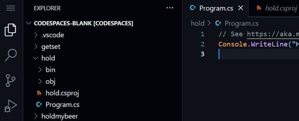
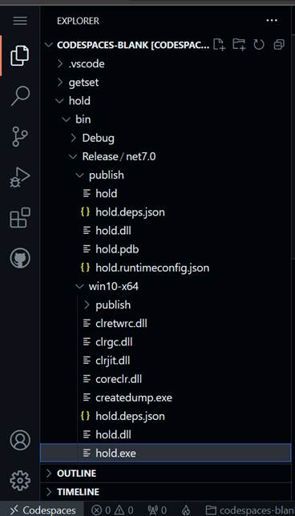
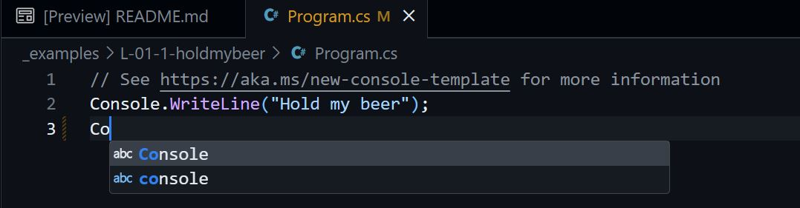
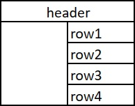
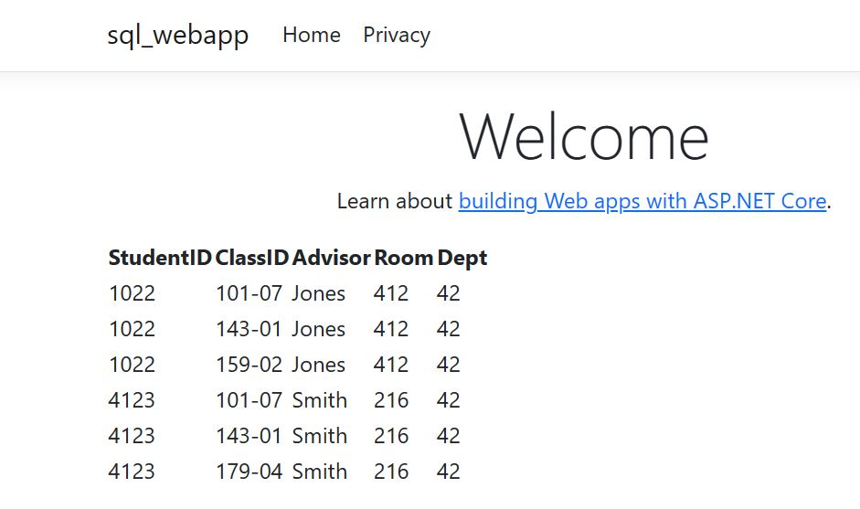
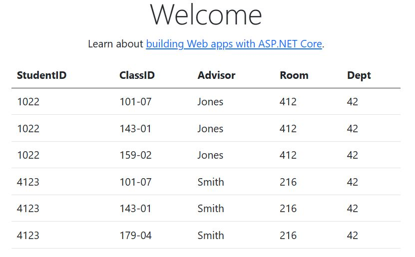

C# Turbo Course

I. Introduction to the Course
.NET supports various types of applications:
Desktop Applications: These are traditional applications that run on Windows-based desktop platforms. They provide a rich user interface and can be built using technologies like Windows Forms (WinForms) or Windows Presentation Foundation (WPF).
Applications for macOS: .NET supports the development of applications for macOS using technologies like Xamarin.Mac and .NET MAUI (Multi-platform App UI). They allow building native macOS applications using C# and .NET.
Linux .NET Core and .NET 5+ support the development of applications for Linux distributions like Ubuntu. You can create console applications, web applications, or even desktop applications targeting the Linux platform.
WEB .NET enables the development of web applications using technologies like ASP.NET, ASP.NET Core, and Blazor. These applications run on web servers and can be accessed through web browsers, providing dynamic and interactive experiences.
Network Stack: Backend/Middleware/Frontend
The WEB stack is very complicated indeed, but if you look at it vertically, it might look something like this:
iOS: Xamarin also allows developing applications for iOS using C# and .NET. It enables code sharing between iOS, Android, and other platforms.
Android: With Xamarin, you can create applications for Android using C# and .NET. Xamarin allows code sharing between Android, iOS, and other platforms.
Windows Phone: Windows Phone development is supported through technologies like Windows Phone Silverlight and Universal Windows Platform (UWP).
Other platforms .NET also has support for other platforms, including smart TVs, IoT devices, game consoles, and more, through frameworks like .NET Core, Xamarin, and Mono.
Net Applications and Tools
GitHub Codespaces a cloud-based development environment provided by GitHub. It allows developers to create and manage fully-configured development environments in their browser. Codespaces provides a seamless and collaborative coding experience, enabling developers to write, build, test, and debug code directly from their web browser without the need for complex local setup. It integrates closely with GitHub repositories, making it easy to clone, edit, and submit code directly within the Codespaces environment.
GitHub Codespaces allows you to open GitHub projects directly in an online development environment. It provides a cloud-based, browser-accessible development environment with pre-configured tools and ready-to-use libraries. If you have a project on GitHub, in Codespaces, you can easily collaborate, develop, and test code without the need to set up a local development environment or install software on your local machine. Codespaces supports various programming languages and frameworks, allowing developers to work on different types of projects, including desktop, web, mobile, and multi-platform applications. It offers integrated development software with features like code editing, debugging, terminal access, and collaboration tools, making it a convenient tool for individuals or teams and facilitating their work on projects from anywhere.
Common Language Runtime (CLR)
The Common Language Runtime (CLR) is the execution environment for .NET applications. It provides core services such as memory management, exception handling, and garbage collection (recycling memory occupied by objects). The CLR also compiles and executes .NET bytecode, known as Common Intermediate Language (CIL), into machine code at runtime for more efficient execution. It offers a managed execution environment that ensures safety of the used data types, security, and language interoperability, allowing different .NET languages to seamlessly work together. Additionally, the CLR provides features like Just-In-Time (JIT) compilation, automatic memory management, and robust error handling, contributing to the reliability and performance of .NET applications.
NuGet
NuGet packages are modular units of code that can be easily shared and reused across different projects. They contain libraries, frameworks, tools, and other components that enhance and streamline the development process. With NuGet packages, developers can easily incorporate existing functionality into their applications, saving time and effort. These packages are managed through the NuGet package manager, simplifying the management of project dependencies on specific packages and controlling library versions.
CLI - Command Line Interface
When creating an application using .NET CLI, you start by opening the console or terminal, which serves as the command-line interface. From there, you can use the dotnet command to create a new project, write code, compile the application, and run it. The .NET CLI provides a streamlined workflow for building and managing .NET applications. With the help of GitHub Codespaces, a development environment is provided that allows you to focus on writing code while the platform takes care of the underlying infrastructure and build processes.
Hold my beer
Creating the Hold my beer application. The dotnet tools offer an easy way to create a "Hello World!" type of application. Simply enter the following command to create a console application:
@404Joe ➜ /workspaces/codespaces-blank $ mkdir holdmybeer @404Joe ➜ /workspaces/codespaces-blank $ cd holdmybeer @404Joe ➜ /workspaces/codespaces-blank/holdmybeer $ dotnet new console
This command creates a new project - the holdmybeer.csproj file in the holdmybeer directory and adds a source code file named Program.cs. The dotnet new command also includes the capability to restore dotnet by automatically downloading and installing all the required NuGet packages from the GitHub Codespaces server. To see a list of library dependencies and their versions used by the application, you can check the project.assets.json file in the obj subdirectory. If the --output option (or -o for short) is not used, the files are generated in the current directory.
Creating a Web Application
Similar to creating a console application, .NET CLI can be used to create a web application. When you enter dotnet new, a list of available templates is displayed. The command dotnet new webapp creates a new web application using ASP.NET Core and Razor Pages technologies. The project file created in this way includes the Microsoft.NET.Sdk.Web SDK. This SDK (Software Development Kit) contains tools and extensions necessary for creating web applications and services.
@404Joe ➜ /workspaces/codespaces-blank/holdmybeer $ cd .. @404Joe ➜ /workspaces/codespaces-blank $ mkdir webapp @404Joe ➜ /workspaces/codespaces-blank $ cd webapp @404Joe ➜ /workspaces/codespaces-blank/webapp $ dotnet new webapp @404Joe ➜ /workspaces/codespaces-blank/webapp $ dotnet run Result: Now listening on: http://localhost:5234
The Nginx server of ASP.NET Core is automatically started and begins listening on port 5234 (or any other port in the 5xxx range). You can open a web browser and access the pages (by clicking the localhost link mentioned above) that this server serves, as shown in the following figure.

Self-Contained Deployments
Self-contained deployments refer to a deployment model where the application and all its dependencies are bundled into a single package. This package includes the .NET runtime, libraries, and other resources required to run the application on the end user's system. Self-contained deployments are platform-specific and independent of the target machine's installed .NET. This approach ensures that the application can run on systems even without a pre-installed .NET framework, making it easier to distribute and deploy .NET applications across different operating systems.
$ dotnet publish -c Release -r win10-x64 $ dotnet publish -c Release -r osx.10.11-x64 $ dotnet publish -c Release -r ubuntu-x64
After executing these commands, the necessary files for publishing can be found in the directories: Release/[win10-x64|osx.10.11-x64|ubuntu-x64]/publish.
Keywords in the C# language
Keywords are reserved words in the language and cannot be used for any other purpose except as keywords. This means that the names of classes, objects, methods, and variables must be different. The following is a list of keywords in C#:
abstract as base bool break byte case catch char checked class const continue decimal default delegate do double else enum event explicit extern false finally fixed float for foreach goto if implicit in int interface internal is lock long namespace new null object operator out override params private protected public readonly ref return sbyte sealed short sizeof stackalloc static string struct switch this throw true try typeof uint ulong unchecked unsafe ushort using virtual void volatile while
Practice
1. Create an account on GitHub: https://github.com/signup
2. Log in to your account and create a new repository /project source code/ https://github.com/new, Name it "csharp" or as desired. Upload an emty file.txt file, created with Notepad on your Desktop.
3. Go to Codespaces: https://github.com/codespaces
4. Select Repository ➜ your repository from step 2, and click Create.
5. Return to Codespaces @ https://github.com/codespaces
6. Under Owned by - your username - you will find the new template. Click on the ellipsis /.../ next to it, choose Rename, and rename it to csharp.
7. Click on csharp - with the left mouse button.
8. On the left side, select the Extensions square. In the Extension Marketplace search, type "C#" and select C# for Visual Studio Code (powered by OmniSharp).
9. Click the [Install] button
10. From the ≡ menu in the top-left corner, choose Terminal/New terminal

Note: In the terminal, you can enter the following commands /as well as many others/:
mkdir hold ➜ creates a directory named hold; ls -la ➜ displays a list of files and directories in the current directory; cd hold ➜ enters the hold sub-directory; cd .. ➜ exits the current directory and goes to the parent directory; rm -rf hold ➜ deletes the hold directory along with its contents (subdirectories and files); rm - remove, + r-recursive + f-files ➜ rm -rf
Execute:
@404Joe ➜ /workspaces/codespaces-blank $ mkdir hold @404Joe ➜ /workspaces/codespaces-blank $ ls -la
Result:
total 12 drwxrwxrwx+ 3 codespace root 4096 May 12 19:13 . drwxr-xrwx+ 5 codespace root 4096 May 12 18:59 .. drwxrwxrwx+ 2 codespace codespace 4096 May 12 19:13 hold @404Joe ➜/workspaces/codespaces-blank $
11. Enter the "hold" directory /cd hold/
@404Joe ➜/workspaces/codespaces-blank $ cd hold @404Joe ➜/workspaces/codespaces-blank/hold $ ls -la
Result:
total 8 drwxrwxrwx+ 2 codespace codespace 4096 May 14 14:58 . drwxrwxrwx+ 7 codespace root 4096 May 14 14:58 .. @404Joe ➜/workspaces/codespaces-blank/hold $
12. In the hold directory, execute: dotnet new console:
@404Joe ➜/workspaces/codespaces-blank/hold $ dotnet new console
Result:
The template "Console App" was created successfully. Processing post-creation actions... Restoring /workspaces/codespaces-blank/hold/hold.csproj: Determining projects to restore... Restored /workspaces/codespaces-blank/hold/hold.csproj (in 117 ms). Restore succeeded. @404Joe ➜/workspaces/codespaces-blank/hold $
Files Program.cs - the program file, hold.csproj - the project file, and the obj directory are created.
@404Joe ➜/workspaces/codespaces-blank/hold $ ls -la
Result:
total 20 drwxrwxrwx+ 3 codespace codespace 4096 May 14 15:00 . drwxrwxrwx+ 7 codespace root 4096 May 14 14:58 .. -rw-rw-rw- 1 codespace codespace 105 May 14 15:00 Program.cs -rw-rw-rw- 1 codespace codespace 249 May 14 15:00 hold.csproj drwxrwxrwx+ 2 codespace codespace 4096 May 14 15:00 obj @404Joe ➜/workspaces/codespaces-blank/hold $
13. The mentioned files appear in the top left:

14. You go back in the terminal to compile the project:
@404Joe ➜/workspaces/codespaces-blank/hold $ dotnet build
Result:
MSBuild version 17.5.1+f6fdcf537 for .NET
Determining projects to restore...
All projects are up-to-date for restore.
hold ➜ /workspaces/codespaces-blank/hold/bin/Debug/net7.0/hold.dll
Build succeeded.
0 Warning(s)
0 Error(s)
Time Elapsed 00:00:05.21
@404Joe ➜/workspaces/codespaces-blank/hold $
15. dotnet run to run it
@404Joe ➜/workspaces/codespaces-blank/hold $ dotnet run
Hello, World!<- Result from the program execution
@404Joe ➜ /workspaces/codespaces-blank/hold $
16. You can replace the content of the Program.cs file with the following:
using System;
namespace MyApplication
{
class Program
{
static void Main(string[] args)
{
Console.WriteLine("Hold my beer!");
}
}
}
// Result:
// Hold my beer!
17. dotnet run ➜ To recompile and run the project with a single command in the terminal, use the following command:
dotnet build - creates hold.dll (dynamic link library). To create an .exe (executable), use:
dotnet publish -c Release -r win-x64
The result is in the directory /workspaces/codespaces-blank/hold/bin/net7.0/win-x64/publish/hold.exe
On the left side of the screen:

The executable .exe file can be downloaded to your local computer and run locally by right-clicking on the directory win10-x64 of the hold.exe file /and selecting ➜ download/.
Other useful commands:
pwd ➜ displays the path to the current directory cat Program.cs ➜ prints /displays/ the contents of Program.cs in the terminal; cat Pro[+tab⇆] ➜ cat Program.cs ➜ automatically completes the name of the file starting with Pro [ctrl] + l ➜ to clear the console [ctrl] + c ➜ to terminate a process ↑ or ↓ ➜ previous commands [ctrl] + [space] ➜ Autocomplete in source code Editor /Look the image below/

!!! File and directory names are case-sensitive. The file Program.cs is different from the file program.cs !!!
@404Joe $ grep -rnw . -e 'Main' --include \*.cs ➜ To search for the line containing the symbol string Main in all subdirectories of the current directory ( . ), in all the files with the extension .cs displays the line (7), if the searched string is found:
@404Joe➜/workspaces/codespaces-blank/hold $ grep -rnw . -e 'Main' --include \*.cs
Result:
./Program.cs:7: static void Main(string[] args)
@404Joe➜/workspaces/codespaces-blank/hold $
18. You can explore the examples for the course at this link.
II. Variables
Comment.
In C#, the double forward slash (//) is used to indicate a single-line comment. Everything written after // on the same line is considered a comment and is ignored by the compiler. Comments are used to add explanatory or descriptive text in the code, so that developers can better understand the code. They are not executed as part of the program.
Here are a few examples of single-line comments:
// This is a comment int x = 10; // Declaration of a variable named x of type int, // initialized with a value of 10 int sum = x + 5; // Calculation of the variable sum; // the value of sum is: 15 /10+5/
Single-line comments are limited to a single line of code. If you need to add a comment that spans across multiple lines, you can use /*multi-line comment*/:
/* This is a multi-line comment. It can span across multiple lines. This and the above 2 lines are multi-line comments. */
Data Types
Integer Types - Natural Numbers
byte: Represents an 8-bit unsigned integer with values ranging from 0 to 255.
int: Represents a 32-bit signed integer with values ranging from -2,147,483,648 to 2,147,483,647. Example: int x = 10;
Floating-Point Numbers
float: Represents a fractional number /single-precision floating-point number/, 32 bits, with approximately 7 digits of precision. Example: float pi = 3.14; float e = 2.73;
double: Represents a a fractional number with double-precision, 64 bits, with approximately 15-16 digits of precision.
decimal: Represents a decimal floating-point number with high precision and a wide range of values. It is often used for financial and monetary calculations that require precise decimal representation.
Character Types
char: Represents a single Unicode character: 'a', 'b', 'Ф', '☆', '7', '$', '#', '預', etc. It can be any character available on the keyboard. For example: char ch = '№';
string: Represents a sequence of characters (chars) and is used for storing and manipulating text in C#. For example: string s = "Hold my beer";
Boolean Type
bool: Represents a logical Boolean value, which can be true or false. It is commonly used for logical operations and logical expressions in C#.
These types represent different kinds of data for storage and manipulation, such as integers, floating-point numbers, characters, and text.
I've seen it, but it does not exsists: void
void - It is a type that indicates no specified type. Functions (more like procedures) declared as void do not return a result/value with return.
var - The var keyword in C# is used to declare variables without specifying a specific type. The compiler automatically determines the type based on the value assigned to the variable, and the type cannot be changed afterward. For example, you cannot assign a number first and then store a string. It must be initialized at the time of declaration: var myString = "Hold my beer";
Variable Declaration
A variable declaration consists of the following:
variable_type variable_name;
variable_type - a valid C# type such as byte, int, float, double, decimal, char, string, bool, etc., or other types/classes valid for the project;
variable_name - should not start with a digit, contain spaces, or be a reserved keyword in the language;
Variable declaration is similar to assigning in mathematics. Once you write "we assign z = x", you can use z in the following lines.
Variable Scope
In C#, the scope of a local variable is determined by the block in which it is declared. A local variable can only be accessed within the block where it is defined, including any nested blocks within it. Once outside the block, the local variable goes out of scope and is no longer accessible. Here's an example to illustrate the scope of a variable:
void MyFunction() { // start of the block where 'x' is declared int x = 10; // Local variable 'x' declared in the function if (x > 5) { // start of the block where 'y' is declared int y = 20; // Local variable 'y' declared in the if block Console.WriteLine(x); // Accessible: 'x' is in scope Console.WriteLine(y); // Accessible: 'y' is in scope } // end of the block where 'y' is declared Console.WriteLine(x); // Accessible: 'x' is in scope Console.WriteLine(y); // ERROR: 'y' is out of scope } // end of the block where 'x' is declared
In the example provided, variable x is accessible throughout the entire function because it is declared in the outer block. However, variable y is only accessible within the { and } block of the if statement because it is declared inside it. Once you exit the if block, the variable y goes out of scope and is no longer accessible.
It's important to note that variables with the same name can be declared in different blocks, and they will have separate scopes. Each block creates a new scope for the variables declared within it.
Local variables with the same name cannot be declared twice within the same scope. For example, you cannot do this:
int x = 20;
// ... source code ... ;
x = 30; // OK, x is assigned 30
int x = 30; // Not OK, because int is used, which means we're declaring x again
Here's another example:
int p = 20;
for (int i = 0; i < 10; i++)
{
int i = 50; // NOT allowed — i is still in scope
int p = 40; // NOT allowed — p is still in scope
p = 30; // This is allowed — we're changing the value of the variable p from 20 to 30
Console.WriteLine(p + i);
}
In this example, within the for loop, the variable x is declared in each iteration, but it does not conflict with the loop variable i because they have separate scopes. However, attempting to declare a new variable p within the loop would cause a conflict because it is already declared in the outer scope.
If you try to compile this, you will receive an error message like the following:
error CS0136: A local variable named 'i' cannot be declared in this scope because it would give a different meaning to 'i', which is already used in a 'closer' scope to define a local or parameter
This happens because the variable i, which is defined before the start of the for loop, is still in the scope of the for loop and will not go out of scope until the for loop finishes execution. The compiler cannot differentiate between these two variables, so it does not allow the second one to be declared.
Constants
In C#, a constant is a value that cannot be changed during program execution. It is declared using the const keyword and must be assigned a value at the time of declaration. Here are some key points regarding constants:
• Declaration of a constant: Constants are declared using the const keyword, followed by the data type and the name of the constant. For example: const int MAX_VALUE = 100;.
• Value assignment: Constants must be assigned a value at the time of declaration, and this value cannot be changed later in the program. For example, const double PI = 3.14159;
• Data types: Constants can be declared with any valid C# data type, including numeric types, strings, characters, boolean values, etc.
• Naming convention: By convention, constant names are usually written in uppercase with words separated by underscores. For example, const int MAX_COUNT = 10;
Usage: Constants are useful when you have a value that needs to remain the same throughout the program and should not be changed accidentally. They can provide meaningful names to important values and improve code readability.
Scope: Constants have block scope, which means they are only accessible within the code block in which they are defined.
Compile-time constants vs. read-only: Constants differ from read-only variables in that the values of read-only variables can be assigned at runtime, while constants are replaced with their values at compile-time.
Here's an example demonstrating the use of constants:
class Program
{
const double PI = 3.14159;
const int MAX_VALUE = 100;
static void Main()
{
Console.WriteLine($"The value of PI is: {PI}");
Console.WriteLine($"The maximum value is: {MAX_VALUE}");
}
}
// Result:
// The value of PI is: 3.14159
// The maximum value is: 100
In the above example, the constants PI and MAX_VALUE are declared and used within the Main method. Once assigned, their values cannot be changed during program execution. Constants are useful for providing meaningful names to important values, improving code readability, and ensuring that specific values remain constant throughout the program.
Note: The line Console.WriteLine($"You entered: {a}"); is called string interpolation. The $ sign before "You entered: {a}" means that the content within the {braces} in the string will be replaced with the value of the variable, i.e., {a} will be replaced with the value of the variable named a.
The null Constant
In C#, the null constant is represented by the keyword null. It is used to indicate the absence of a value or that a variable of an object type does not reference an object. Here are a few key points regarding the null constant:
• null is not a valid value for value types (such as int, bool, etc.), but it can be assigned to any variable of a reference/object type.
• When a variable is assigned the value null, it means that it does not reference an object in memory.
null can be used for various purposes, such as initializing variables, indicating an uninitialized state, or checking for null conditions before accessing object members or invoking object methods.
null Forgiving Operator
The ! operator is called the null-forgiving operator. It is used to suppress compiler warnings for null references. Here are some important details:
• The null-forgiving operator tells the compiler to assume that an expression or variable will never be null, even if static analysis suggests otherwise.
• It is denoted by placing ! after the expression or variable, like: myVariable!
Using the null-forgiving operator can be useful when you are certain that a given value will never be null. However, be cautious as it removes null safety checks at compile time. If the value actually turns out to be null during runtime, a NullReferenceException will be thrown.
It is important to note that the null-forgiving operator should be used judiciously and only when you are absolutely certain that no null values will occur. In general, it is better to ensure proper null checking and handling to avoid potential runtime exceptions.
Assignment operator (= ➜ read this as 'assigns'!!!)
When declaring a variable, you can assign it an initial value:
int a = 10; // = ➜ the assignment operator; read as 'a assigns ten' char ch = '№'; float pi = 3.14;
The = sign is called assignment and it means that the value of variable a is set to the number 10.
If the initial value of a variable is not assigned, it is set to a random number (or a random character if the variable is of type char).
It is possible to assign a value to a variable separately from its declaration:
float euler; euler = 2.71;
Numeric Variable Operations
In other cases, the variable directly assigns a value that is the sum or product of values or variables, for example:
int a, b = 10; a = 20 + b;
After performing the above operation, the value in variable a is 30.
The following Arithmetic Operators are allowed in the C# language:
• + ➜ Addition
• - ➜ Subtraction
• * ➜ Multiplication
• / ➜ Division
• % ➜ Remainder (only for the int/byte data type)
The mentioned operations are binary, meaning they require two operands: left and right. The remainder operation is applied only to integer types.
String Operations
Concatenation of 2 strings ➜ operator +:
string str1 = "Hold"; string str2 = "my beer"; string result = str1 + " " + str2; // " " - space character Console.WriteLine(result); // Result: // Hold my beer
Is String1 equal to String2 ?
string str1 = "Hold my";
string str2 = "Beer";
if (str1 == str2)
{
Console.WriteLine("The strings are equal.");
}
else
{
// else is executed, because "Hold my" is different from "Beer"
Console.WriteLine("The strings are not equal.");
}
// Result:
// The strings are not equal.
In the above example, the == (!!! == is called equals !!!) operator is used to compare str1 and str2. If the strings are equal, it will print "The strings are equal". Otherwise, it will print "The strings are not equal".
Note that the == operator compares the content of the strings, meaning
"Hold" == "hold" ➜ yields false because "Hold" starts with an uppercase letter, while "hold" does not.
If you want to perform a comparison regardless of whether the letters are uppercase or lowercase, you can use the String.Equals method with the appropriate parameters, like this:
string str1 = "Hold";
string str2 = "hold";
if (string.Equals(str1, str2, StringComparison.OrdinalIgnoreCase))
{
// this block executes
// Unlike the previous example, now "Hold" == "hold"
// because the letter case is ignored.
Console.WriteLine("The strings are equal. (Case-insensitive)");
}
else
{
Console.WriteLine("The strings are not equal. (Case-insensitive).");
}
// Result:
// The strings are equal. (Case-insensitive)
In the last example, the string.Equals method is used with the StringComparison.OrdinalIgnoreCase parameter to compare str1 to str2 in case-insensitive manner /regardless of the letter case/.
Useful methods of the string object for working with character strings:
str1.StartsWith: Checks if the string starts with a specific substring.
str1.EndsWith: Checks if the string ends with a specific substring.
str1.Contains: Determines if the substring is present in the string.
str1.IndexOf: Returns the index of the first occurrence of a specific substring.
str1.LastIndexOf: Returns the index of the last occurrence of a specific substring.
str1.Substring: Extracts a substring based on the specified starting index and optional length.
str1.Replace: Replaces all occurrences of a specific substring with another substring.
str1.ToUpper: Converts the string to uppercase.
str1.ToLower: Converts the string to lowercase.
str1.Trim: Removes the leading and trailing whitespace from the string.
Practice
String Manipulation Problems - in the next topic /III. Control Statements/
Copying repositories from GitHub:
Open Codespaces, like the previous time.
Create a directory called "copy" using the command mkdir copy and navigate into it with cd copy.
git clone https://github.com/404joe/csharp.git
To copy the entire project from the course examples
Alternatively
curl -O https://raw.githubusercontent.com/404joe/csharp/master/_examples/L-01-1-holdmybeer/Program.cs curl -O https://raw.githubusercontent.com/404joe/csharp/master/_examples/L-01-1-holdmybeer/holdmybeer.csproj
To copy only the 2 files from the hello project
Execute the following commands
$dotnet build
$dotnet run
Reading an integer variable from the console into the variable a:
Console.WriteLine("Enter a = ");
int a = int.Parse(Console.ReadLine());
// or the following for a fractional number
Console.WriteLine("Enter a = ");
double a = double.Parse(Console.ReadLine());
Practice Variables
1. Write a program that accepts two integers, a and b, from the user and outputs their sum, difference, and product.
2. Write a program that takes a temperature in Celsius and converts it to Fahrenheit. The conversion formula is:
TF = ( TC * 9/5) + 32
where: TF - Temperature in Fahrenheit (calculated and displayed); TC - Temperature in Celsius (input from the terminal).
3. Write a program to determine:
• the perimeter of a triangle if the lengths of its sides a, b, and c are read from the user input.
• the area of a triangle if user input is the length of one of its sides a and the height h corresponding to it.
• the area of a triangle, by using Heron's formula: s = sqrt( p * ( p - a ) * ( p - b) * ( p - c ) ); p = ( a + b + c ) / 2.
Hint: The function Math.Sqrt(number); - calculates the square root, for example Math.Sqrt(16) ➜ 4;
4. Write a program that calculates the volume of a triangular pyramid using the formula: v = s*h*1/3, The following inputs are taken from the keyboard:
• the area of the base s and the height h of the pyramid;
• the lengths of the sides of the base a, b, c and the height h of the pyramid /in this case, s is calculated using Heron's formula from problem 3/ .
5. Write a program to calculate the distance between two points with given coordinates A(x1, y1) and B(x2, y2). The inputs are x1, y1, x2, y2.
6. Write a program in which the user enters:
• two numbers
• three numbers
and it outputs the value of the largest number.
Hint: Math.Max(5, 8) ➜ Result: 8
7. Write a program that takes an angle in degrees as input and prints its sine.
Hint:
double degrees = 45.0;
double radians = degrees * (Math.PI / 180.0);
double sine = Math.Sin(radians);
Console.WriteLine("sin(" + degrees + ")=" + sine);
8. You have an unlimited number of banknotes of denominations $1, $2, and $5. Write a program that distributes an amount entered from the keyboard in such a way that it consists of the smallest possible number of banknotes.
III. Control Statements: if × for
CONTROL FLOW DURING PROGRAM EXECUTION
This section discusses the expressions that allow you to control the flow of execution in your program. With conditional control statements - expressions like the if and switch statements, you can branch your code depending on whether certain conditions are met. You can repeat expressions using loop statements like for, while, and foreach.
Logical Expressions
Logical expressions are composed of variables or values connected by logical operators. In computer science, logical expressions yield one of two possible values: true (in C language, typically represented by a non-zero value) or false (in C language, typically represented by the value zero). Binary logical operators operate on two values, while the unary operator (specifically the not operator) operates on a single value. The logical operators are as follows:
! (NOT) operator: It inverts the logical value of an expression. If we have an expression that is true, then ! makes it false; if the expression is false, then ! makes it true.
bool a = true;
bool b = !a; // b == false;
&& (AND) operator: It performs a logical AND operation between two expressions. It returns true if both expressions are true, and false otherwise.
|| (OR) operator: It performs a logical OR operation between two expressions. It returns true if at least one of the expressions is true, and false if both expressions are false.
^ (XOR) It performs a logical XOR (exclusive OR) operation between two expressions. It returns true if the expressions have different logical values (one is true and the other is false), and false if the expressions have the same logical value (both true or both false)
Logical operators for comparison
When constructing logical expressions that involve comparing values or values of variables of numeric types, relational operators are used in the C language. The result of executing these operators is also true or false:
a == b returns true, if a is Equal to b
a != b returns true, if a is Not Equal to b
a > b returnstrue, if a is Greater then b
a < b returns true, if a Is Less then b
a >= b returns true if a Is Greater then or Equal to b
a <= b returns true, if a is Less then or Equal to b
The if Statement
The if statement allows you to execute a conditional block of code if a given logical expression is has value true.
if (logical_expression) { this block executes, only if logical_expression is evaluated to true }
For example:
int a = -120; // -120 <= negative number
if (a > 0)
{
// The code is executed if a is positive, in this case it is not executed
// because a == -120.
// logical_expression: a > 0 ➜ -120 > 0 ➜ false
}
The if-else: Statement
The if/else statement extends the 'if' statement by providing an alternative code block for execution if the condition is false /with a value of false/. It allows you to control two different cases. For example:
a = -120; // -120 <= negative number
if (a > 0)
{
// This block of code is not executed because a == -120,
// logical_expression: a > 0 ➜ -120 > 0 ➜ false
}
else
{
// This block of code is executed only when a > 0 is false
// logical_expression: a > 0 ➜ -120 > 0 ➜ false
// Therefore, it will be executed because a > 0 is not true,
// i.e., when a < 0 or a == 0
}
if / else if / ... / else if / else statement: This statement allows you to handle multiple logical_expressions sequentially. Each logical expression is evaluated one by one, and the corresponding code block is executed for the first logical_expression that evaluates to true. If none of the logical expressions in the if statements are satisfied (logical_expressions == false), the else block is executed as a fallback option. For example:
int a = -120; if (a > 0) { // {if block №1 } // Not executed because a == -120; a > 0 ➜ -120 > 0 ➜ false Console.WriteLine("a is a positive number"); } else if (a == 0 ) { // {if block №2} // Not executed because a == -120; a == 0 ➜ -120 == 0 ➜ false Console.WriteLine("a is zero"); } else { // {else block} // Executed because a == -120; and neither a > 0 nor a == 0 are satisfied // therefore, no need to check for a < 0 since if it's not zero // and is not positive, it remains only to be negative Console.WriteLine("a is a negative number"); } // Result: // a is a negative number
Important: In the constructs:
if(...) { action1; action2; }
the curly braces {} can be omitted, but only when there is only one action inside them like: { action1; } <- only one ; in {}. In that case, the notation becomes:
if(...)
action1;
Shortened Conditional Operator /Ternary Operator/
The ternary conditional operator, to some extent, replaces the if statement and is convenient in certain cases, such as when checking variable values:
Variable = (logical_expression) ? value to be returned if logical_expression is true : value to be returned if logical_expression is false;
Example:
int a; a = 5 > 3 ? 10 : 20; // a == 10
The value of a after executing the above line is 10 because 5 is always greater than 3 (true), so the first value (10) is returned. In the alternative case:
int a; a = 5 < 3 ? 10 : 20; // a == 20
The value of a becomes 20. The numbers in the above two examples can be replaced with variables.
Switch Statement
Similar to the if statement, the switch statement is used to select one of several possible options. Its syntax can be demonstrated with the following example: Write a program where an integer within the range [1, 7] is entered, and the program outputs the corresponding day of the week.
int day = 3;
switch ( day )
{
case 1 : System.Console.WriteLine("Monday"); break;
case 2 : System.Console.WriteLine("Tuesday"); break;
case 3 : System.Console.WriteLine("Wednesday"); break;
case 4 : System.Console.WriteLine("Thursday"); break;
case 5 : System.Console.WriteLine("Friday"); break;
case 6 : System.Console.WriteLine("Saturday"); break;
case 7 : System.Console.WriteLine("Sunday"); break;
default : System.Console.WriteLine("The number is not in the range [1, 7]"); break;
}
// Result:
// Wednesday // because the day variable equals 3
switch is a keyword, and the variable inside the parentheses can be of type char (or int - integer).
Its execution proceeds as follows: Sequentially, it checks whether the value of the variable (inside the parentheses) matches the values of the constants (or variables) following the case clauses. In case of a match, the corresponding sequence of instructions is executed (in this case, printing the respective day of the week). The break command causes the execution of the switch statement to be interrupted, and execution continues after the closing curly brace } of the switch statement. The "default" clause is not mandatory. If it exists, it is executed only if the value of the expression does not match any of the enumerated case values (or variables).
A program in which a number (from 1 to 12) representing a month is entered, and the program shows which season it belongs to:
int month = 5;
switch(month)
{
case 12 : case 1 : case 2 : Console.WriteLine(" Winter "); break;
case 3 : case 4 : case 5 : Console.WriteLine(" Spring "); break;
case 6 : case 7 : case 8 : Console.WriteLine(" Summer "); break;
case 9 : case 10 : case 11 : Console.WriteLine(" Autumn "); break;
default : Console.WriteLine<<"The entered month is not within the range [1, 12] "; break;
}
// Result:
// Spring
The construction
case 3: case 4: case 5: Console.WriteLine("Spring"); break;
is interpreted by the computer as: If the variable "month" is 3, or 4, or 5, then print Spring
The for loop
C# provides four different loop statements (for, while, do-while, and foreach) that allow you to execute a block of code repeatedly until a given logical_expression evaluates to false. With the for keyword, you iterate through the loop by testing a certain logical_expression to be true before performing another iteration.
for (int i = 0; i < 100; i++) { Console.Write(i + " # "); // This line is repeated 100 times, at the first execution // i == 0 /initial value/; at the second execution i == 1; ... // in the last execution i == 99, // and after the i++ ➜ i == 100, the logical // expression becomes 100 < 100 ➜ false ➜ // the execution stops. } // Result: // 0 # 1 # 2 # 3 # 4 # 5 # 6 # 7 # 8 # 9 # 10 # 11 # 12 # 13 # 14 # 15 # 16 # 17 # // 18 # 19 # 20 # 21 # 22 # 23 # 24 # 25 # 26 # 27 # 28 # 29 # 30 # 31 # 32 # 33 # // 34 # 35 # 36 # 37 # 38 # 39 # 40 # 41 # 42 # 43 # 44 # 45 # 46 # 47 # 48 # 49 # // 50 # 51 # 52 # 53 # 54 # 55 # 56 # 57 # 58 # 59 # 60 # 61 # 62 # 63 # 64 # 65 # // 66 # 67 # 68 # 69 # 70 # 71 # 72 # 73 # 74 # 75 # 76 # 77 # 78 # 79 # 80 # 81 # // 82 # 83 # 84 # 85 # 86 # 87 # 88 # 89 # 90 # 91 # 92 # 93 # 94 # 95 # 96 # 97 # // 98 # 99 #
The first expression in the for loop is the initializer. It is evaluated before the first execution. Usually, a local variable is initialized as a counter.
The second expression is the logical_expression_for_termination. It is checked before each execution of the for block. If this expression evaluates to true, the block is executed. If it evaluates to false, the for loop terminates, and the program continues with the next statement after the closing curly brace } of the for block ➜ after the closing bracket }.
Once the block is executed, the third expression, the iterator, is executed. Typically, you increment the counter of the loop. Using i++ adds the number 1 to the variable i. i++ ⟷ i = i + 1 ⟷ i += 1; Similarly, i += 10 increases i by 10. After the third expression, the logical_expression_for_termination is evaluated again to determine if a new execution of the for block should be performed.
The for loop is a precondition loop because the logical_expression_for_termination is evaluated before the execution. Therefore, the {content} of the / for () { ... content ... } / will not be executed at all if the logical expression has a false value. false.
for loops can be nested, so the inner loop is executed completely once for each iteration of the outer loop. This approach is commonly used for traversing each element in a rectangular two-dimensional array. The outer for loop iterates through each row, and the inner for loop iterates through each column within the specified row. The following code displays rows of numbers. It also uses another method of the console, Console.Write, which does the same as Console.WriteLine but does not return the cursor to the beginning of the line:
for (int p = 0; p < 10; p++)
{
for (int q = 0; q < 10; q++)
{
int num = (p * 10) + q;
Console.Write($"{num:D2} "); // :D2 - Prints the number with
// leading zeros if necessary.
// Delaying execution by
// 0.2 seconds - 200 milliseconds,
// to create something like animation.
Thread.Sleep(200);
}
Console.WriteLine();
}
After approximately 20 seconds / 0.2 sec. × 10 × 10 ➜ 20 sec. / This will result in the following:
00 01 02 03 04 05 06 07 08 09 10 11 12 13 14 15 16 17 18 19 20 21 22 23 24 25 26 27 28 29 30 31 32 33 34 35 36 37 38 39 40 41 42 43 44 45 46 47 48 49 50 51 52 53 54 55 56 57 58 59 60 61 62 63 64 65 66 67 68 69 70 71 72 73 74 75 76 77 78 79 80 81 82 83 84 85 86 87 88 89 90 91 92 93 94 95 96 97 98 99
Each number is displayed with two digits / specifier :D2 /, which ensures that numbers below 10 have a leading zero.
Console.Write and Console.WriteLine
The difference between Console.Write and Console.WriteLine is as follows:
Console.Write('a');
Console.Write('a');
Console.Write('a');
// Result:
// aaa
With WriteLine:
Console.WriteLine('a');
Console.WriteLine('a');
Console.WriteLine('a');
// Result:
// a
// a
// a
- In other words, Console.WriteLine('a'); adds a new line character / "\r\n" / after 'a', while Console.Write('a'); does not add it.
The while loop
Similar to the for loop, the while loop is a precondition loop. The syntax is similar:
int i = 0; while (i<100) { // ... instructions ... i++; }
Unlike the for loop, the while loop is most commonly used to repeat an operator or a block of operators/commands for a certain number of times that are not known before the start of the loop.
The do-while loop is a post-condition loop. This means that the termination logical_expression_for_termination of the loop is evaluated after the { block } of the loop has been executed. Therefore, do-while loops are useful in situations where a block of expressions needs to be executed at least once, as in this example:
int state = 1000; do { // This loop will execute at least once, even if the logical expression has a false value. // This will be executed once: state ++; // state == 1001 } while (state<100); // 1001 < 100 ➜ false ➜ // Execution continues from the next line Console.WriteLine($"state is: {state}"); // Result: // state is: 1001
The foreach loop
In the following code, assuming that intArray is an array of type int:
foreach (int variabl in intArray)
{
Console.WriteLine(variabl);
}
Break and continue statements
An example illustrating the use of break and continue statements in an iterative loop is presented in the following problem: Create a program that takes an input number and outputs it to the screen until the number 0 is entered:
int a;
do
{
Console.WriteLine(" Enter a number; enter 0 to exit");
a = int.Parse(Console.ReadLine());
if ( a == 0 )
{
break; // The while loop breaks the do loop if 0 is entered for a.
}
Console.WriteLine($"You entered: {a}");
} while ( true ); // a logical expression always having the value true.
// Result:
// Enter a number; enter 0 to exit
// 5
// You entered: 5
// Enter a number; enter 0 to exit
// 6
// You entered: 6
// Enter a number; enter 0 to exit
// 0
The solution to the problem can also be implemented using the continue statement to skip to the next iteration.
int a; while ( true ) // { while block, repeats indefinitely } { Console.WriteLine("Enter a number; enter 0 to exit"); a = int.Parse(Console.ReadLine()); if ( a != 0 ) { // if the input for a is 0 // the actions within the { ... } braces are not performed Console.WriteLine($"You entered: {a}"); continue; // Move to the next execution of the while loop // i.e., Console.WriteLine("Enter... } break; // Move to the next execution if a == 0, because if ( a != 0 ) is not executed, // therefore, continue is not executed. } // Result: Enter a number; enter 0 to exit 5 You entered: 5 Enter a number; enter 0 to exit 6 You entered: 6 Enter a number; enter 0 to exit 0
Bitwise Operators
Here's a brief summary of the bitwise operators in C#:
bit - a unit of information with a value of 1 /true/ or 0 /false/
<< (left shift): Shifts the bits of a number to the left by a specified number of positions. The number 4 in binary is 00000100. 00000100 << 2 will result in 00010000. 00010000 = 16 (decimal). << is very useful for multiplication by 2 (or finding powers of 2) because every time a binary number is shifted left by 1 position, its numerical value doubles.
For example, 4 << 3 = 32, because 4 << 3 ⟷ 8 << 2 ⟷ 16 << 1 = 32;
Equivalent to 4 × (2^3) = 32;
>> (right shift): Shifts the bits of a number to the right by a specified number of positions. Each right shift divides the number by 2. For example:
00100000 (32 in decimal) >> 2 = 00001000 (8 in decimal), or:
32 >> 2 = 16 >> 1 = 8.
| (bitwise OR): Performs a bitwise OR operation on two numbers, setting each resulting bit to 1 if at least one of the corresponding bits is 1.
& (bitwise AND): Performs a bitwise AND operation on two numbers, setting each resulting bit to 1 only if both corresponding bits are 1.
^ (bitwise XOR): Performs a bitwise XOR (exclusive OR) operation on two numbers, setting each resulting bit to 1 if the corresponding bits are different.
These operators work on individual bits of binary representations of numbers and are often used for low-level bitwise manipulation or specific scenarios requiring bitwise operations.
Regarding the bitwise operators OR, XOR, AND - they can be used to set individual bits or read individual bits. Bits are numbered from right to left, with the rightmost bit at position 0. Example: Position 0: 00000100; Position 4: 00000100; Position 7: 00000100. Below are examples of their usage:
Problem 1: Number: 00000100. Read bit 2 - If it's set to 1, return true; false otherwise? Solution: To read the value of bit 2 in the number 00000100, we shift the position of the number 2 to the right using the >> operator and perform a bitwise AND with 00000001 (decimal 1, also known as a mask). If the result is 1, the bit is set to 1; if the result is 0, the bit is not set, and the result is false:
The variable isBitTrue will be true because the bit at position 2 in the number 00000100 is 1.
Problem 2: Number: 00000100. Set bit 2 to 0. Solution:
To unset (set to 0) bit 2 in the number 00000100, we can use the bitwise AND operator (&) with a bitmask that has 0 in bit 2 and 1 everywhere else /11111011/.
The value of result will be 0b00000000, which means that the bit at position 2 is cleared (set to 0).
Problem 3: Number: 00000100. Set bit 4 to 1. Solution:
To set (set to 1) bit 4 in the number 00000100, we can use the bitwise OR operator (|) with a bitmask that has 1 in bit 4 and 0 everywhere else.
int number = 0b00000100; int bitMask = 1 << 4; int result = number | bitMask;
The value of result will be 0b00010100, which means that the bit at position 4 is set to 1.
Functions
A function in programming is a piece of code that performs a certain activity and returns a result, for example:
int add(int a, int b)
{
return a+b; // Returning the Result /sum
// of a and b from the code's execution
}
The function is called by its name, for example: add(10, 15) -> The result 25 as a number is placed where the function is called; it can be invoked in the following way:
int c = add(15, add(10, 10)); // The variable c is assigned the value 35.
In C#, they are called methods, but they are essentially a kind of functions.
Main Function - The Main function is an entry point for every program; the program's execution starts from it. When the program is started by the user, the operating system calls the Main function once.
Recursion - when a given function calls itself. This results in something similar to an iterative loop that requires a logical_expression for termination, otherwise, it repeats indefinitely:
public class Program
{
public static void Main()
{
Console.WriteLine("Hold my beer");
Main(); // The function Main is called
// which calls itself,
// again and again infinitely
}
}
Here's an example of a recursive function in C# to calculate the sum of numbers from 1 to 100 /1+2+3+...+99+100/:
public static int SumR(int n) { if (n == 1) { // If n reaches 1, the execution is terminated; // logical_expression return 1; } else { // If n > 1, return the current value of n + SumR(n - 1); return n + SumR(n - 1); } } // Usage of the recursive function : int result = SumR(100); Console.WriteLine(result); // Result: 5050
In this example, the SumR function takes an integer n as input and recursively calculates the sum of numbers from n to 1. The logical expression for termination is when n becomes equal to 1, then the function returns 1. Otherwise, it adds n to the result and recursively calls itself with the parameter n-1. Finally, we invoke the SumR function with 100 as input and print the result.
The same problem solved with a for loop:
public static int SumF(int n) { int sum = 0; for (int i = n; i >= 1; i--) { sum += i; // Equivalent to sum = sum + i: adding i to sum } return sum; } // Usage of the for version /without recursion/: int result = SumF(100); Console.WriteLine(result); // Result: 5050
In this version, we initialize the variable sum with 0 and use the for loop for iteration from 100 to 1 (inclusive). The code inside the { ... } brackets is repeated in descending order, and with each iteration, the value of i is added to the variable sum, after which the value of i is decreased by 1. Finally, the calculated sum is returned using return. This achieves the same result as the recursive version, but without using recursion.
Practice
Logical Expression Problems
1. What is the result of the following operation: ! (a && 1) when a = 0?
2. What is the result of the following operation: ( ( a <= b ) || ( c > d ) ) when a = 5, b = 7, c = 4, d = 3?
3. What is the result of the following operation: !( (a > b )&&(a ! = c) ), when:
• a=1; b=2; c=3 ?
• a=3; b=2; c=1 ?
4. Write a logical expression regarding a and b that:
• returns true if a is in the range [-3; 2] and b is in the range [5; 7]
• returns false if a is in the range [5; 7] or b is in the range [-3; 2]
5. Write a logical expression that returns true if point A (x, y) is inside the circle O with radius R and center C (a, b)
6. Write a logical expression that returns true if point A (x, y) is inside the rectangle ABCD with center O (p, q) and sides a and b.
7. Write a logical expression that returns true if point A (x, y, z) is inside the sphere with center O (p, q, r) and radius R.
Problems for if and switch Operators
1. Write a program that reads an integer from the keyboard and determines whether it is even or odd. Hint: Use the % operator for the remainder of integer division.
2. Write a program that inputs the coordinates of two points A(x1, y1) and B(x2, y2) from the plane and determines if both points lie in Quadrant I.
3. Write a program that reads an integer from the keyboard in the range [1, 19], and the program outputs it as:
• text
• Roman numerals
4. The axes of a rectangular coordinate system divide the plane into four quadrants, numbered from 1 to 4. The coordinates are integers. Write a program that inputs values for X and Y (point coordinates) and then outputs in which quadrants the point is located.
5. Write a program that takes two strings from the user and outputs whether they are equal or not. Hint: Use the string.Compare method:
The first string is smaller than the second
string s1 = "hold my";
string s2 = "beer";
int result = string.Compare(s1, s2);
if (result == 0)
{
Console.WriteLine("The two strings are equal");
}
else if (result < 0)
{
Console.WriteLine("The first string is smaller than the second");
}
else
{
// Executed if result > 0, meaning "hold my" < "beer"
// because the letter b comes before the letter h
Console.WriteLine("The first string is greater than the second");
}
// Result:
// The first string is greater than the second
6. Write a program that takes three integers from the user and outputs the value of the largest one.
• Math.Max(5, 7) -> returns 7, like this
• using the if statement
7. Write a program that accepts a number from the user and outputs whether it is even or odd. Use the modulo operator for integer division remainder: 5%2 == 1 (remainder when dividing 5 by 2); 6%2 == 0; 7%2 == 1, .... ➜ a%2 == 0 ➜ the number is even;
8. Write a program that accepts two integers from the user and uses a for loop to output all the even numbers between them (inclusive).
9. Write a program that accepts a number from the user and outputs whether it is positive, negative, or zero.
10. Write a program that accepts two numbers from the user and outputs whether the first one is greater than, less than, or equal to the second one.
11. Write a program that accepts a string and prints its length.
string str = "Hold my beer";
int length = str.Length; // length is 12; str.Count(); ➜ 12
For/while/do-while loop exercises
1. Write a program that accepts an integer N and prints the even numbers from 0 to N using: for/while/do-while. Make it work in reverse with a step of 0.25 (print 25, 24.75, 24.50, ..., 1.25, 1).
2. Write a program that determines how many elements the sum: 1 + 1/2 + 1/3 + 1/4 + ... + 1/N should have, so that the sum is less than 4.
3. Write a program that calculates the product of two input integers, a and b, using only addition.
4. Write a program that prints on the screen the points where the graph of the function: y = f(x) = x(80 – x)/80 + 1; passes through, where x belongs to the interval [1..80] and is an integer.
Hint:
int x, y, fx;
for (y = 25; y >= 1; y-- )
{
for (x = 1; x <= 80; x++ )
{
fx = x * ( 80 - x ) / 80 + 1;
if (fx == y )
{
Console.Write("*");
}
else
{
Console.Write(" ");
}
}
Console.WriteLine(); // inserts a new line
}
IV. Arrays
One-Dimensional Arrays
In C#, a one-dimensional array is a collection of elements of the same data type that are stored in a contiguous block of memory - similar to a sequence of numbers arranged in a row of a table. It is declared using square brackets and a specific size, like this:
int[] myArray = new int[5];
This creates an array of integers called `myArray` with a length of 5 elements. The array can be accessed using index notation - 'myArray[index]'. The index of the array is always of type `int` - an integer, and the first element is always at index 0:
int[] myArray = new int[5]; myArray[0] = 21; myArray[1] = 52; myArray[2] = 12; myArray[3] = 14; myArray[4] = 45;
The values of the elements in the array can be assigned individually (as shown in the above example) or through a loop:
int[] myArray = new int[5];
for (int i = 0; i < myArray.Length; i++)
{
Console.WriteLine($"Enter element[{i}]=");
myArray[i] = int.Parse(Console.ReadLine());
}
In C#, the first element of the array always has an index of 0. The last element has an index of `array.Length - 1`.
You can also declare and initialize an array in a single expression, like this:
int[] myArray = {21, 52, 12, 14, 45};
This creates an array of integers called 'myArray' with the same values as in the previous example.
An alternative way to iterate over the array is using the 'foreach' loop:
int[] myArray = {21, 52, 12, 14, 45};
foreach (int number in myArray )
{
Console.WriteLine(number + " ; ");
}
In this example, we have an integer array named 'myArray' with five elements. The 'foreach' loop iterates over each element in the array and displays it on the screen. The result will be:
21 ; 52 ; 12 ; 14 ; 45 ;
Arrays can be passed as parameters to methods, and arrays can be returned from methods. They can also be used in combination with other data types, such as multidimensional arrays, jagged arrays, and arrays of objects.
Algorithms
Sum of Array Elements /Summation/
int[] myArray = {21, 52, 12, 14, 45};
int sum = 0; // sum accumulator, mandatory initialization to 0
// if the accumulator is not initialized, it may have
// an arbitrary value, and the sum may not be accurate
foreach (int number in myArray )
{
sum += number;
}
Console.WriteLine("Sum: " + sum);
//Result:
Sum: 144
The 'foreach' operator iterates over each element in the array and adds it to the variable 'sum'. After the 'foreach' loop finishes, we print the total sum to the console.
The 'foreach' operator is a convenient way to iterate over the elements of a one-dimensional array and perform operations such as summing the values.
Finding the Maximum Element /Filtering/
int[] myArray = {21, 52, 12, 14, 45};
int indmx = 0; // index of the maximum element
// with zero, it pints to the first element
for (int i = 1; i < myArray.Length; i++)
{
if (myArray[indmx] > myArray[i] )
{
indmx = i;
}
}
Console.WriteLine($"Max element: myArray [{indmx}] = {myArray [indmx]} " );
// Result:
// Max element: myArray [1] = 52
In this example, we initialize the variable indmx with the index of the first element in the array (0). Then we iterate through the remaining elements of the array using a for loop. If an element at a given index i is greater than the element at the current maximum index, we update indmx to the current index (indmx = i;). Finally, we print the value of the maximum element.
Printing the Parity of Array Elements /Filtering-2/
int[] myArray = {21, 52, 12, 14, 45};
for (int i = 1; i < myArray .Length; i++)
{
Console.WriteLine($"myArray[{i}]=" + myArray[i] + " - " +
(myArray[i] % 2 == 0 ? "even" : "odd"));
}
// Result:
// myArray[0] = 21 - odd
// myArray[1] = 52 - even
// myArray[2] = 12 - even
// myArray[3] = 14 - even
// myArray[4] = 45 - odd
In this example, the for loop iterates over each element in the array of numbers. The expression myArray[i] % 2 == 0 checks if the number is even by using the modulus operator (%) to check if there is no remainder (0) when dividing by 2. If the logical expression evaluates to true, "even" is printed; otherwise, "odd" is printed.
Summing Even and Odd Elements /Filtering+Summation/
int[] myArray = {21, 52, 12, 14, 45};
int sumOfOdd = 0;
int sumOfEven = 0;
foreach (int number in myArray)
{
if (number % 2 == 0)
sumOfEven += number; // !!! Here, the curly braces {} of if/else blocks are
else // intentionally omitted because when there is only one command/operation/line
sumOfOdd += number; // in the if/else/for block, like in this case, they can be omitted, but
// only in this case.
}
Console.WriteLine("Sum of odd elements: " + sumOfOdd);
Console.WriteLine("Sum of even elements: " + sumOfEven);
// Result:
// Sum of odd elements: 66
// Sum of even elements: 78
We use the foreach loop to iterate over each element in the array. For each element, we check if it is even or odd using the modulus operator (%). If the number is even (divisible by 2), we add it to the sumOfEven variable. If it is odd, we add it to the sumOfOdd variable. Finally, we print the sums of the odd and even elements.
Note: This example assumes that the array contains integers (int) because of the modulus operator (%) which can only work with them.
Grouping Array Elements
Example: In a given one-dimensional integer array, the hair colors of 15 people are encoded. 0-blonde, 1-red, 2-brown, 3-black. Write a program to determine the number of people in each group.
Grouping Array:
int[] hairColors = { 0, 1, 2, 0, 0, 1, 1, 3, 0, 0, 2, 3, 0, 1, 2 };
int[] colorCounts = {0, 0, 0, 0};
foreach (int color in hairColors)
{
colorCounts[color]++;
}
Console.WriteLine($" Color - 0 - blonde : {colorCounts[0]} ");
Console.WriteLine($" Color - 1 - red : {colorCounts[1]} ");
Console.WriteLine($" Color - 2 - brown : {colorCounts[2]} ");
Console.WriteLine($" Color - 3 - black : {colorCounts[3]} ");
// Result:
// Color - 0 - blonde : 6
// Color - 1 - red : 4
// Color - 2 - brown : 3
// Color - 3 - black : 2
Array Sorting /bubble sort/
int[] numbers = {21, 52, 12, 14, 45};
// Bubble sort algorithm
for (int l = 0; l < numbers.Length - 1; ;++)
{
for (int r = l + 1; r < numbers.Length - 1; r++)
{
if (numbers[l] > numbers[r])
{
// Swap elements
int temp = numbers[l];
numbers[l] = numbers[r];
numbers[r] = temp;
}
}
}
// Print the sorted array
foreach (int num in numbers)
{
Console.Write(num + " ");
}
// Result: 12 14 21 45 52
Bubble Sort Algorithm for sorting an array in ascending order. The outer for loop traverses the array from the first element to the last element. The inner for loop traverses all elements to the right of it. If a given element is greater than its right element, they are swapped to place the larger element from the right to the left. The process continues until the array is fully sorted (traversed by the outer for loop).
Swap Two Elements - way I
int a = 5; b = 10; // swap: int tmp = a; // tmp == 5 a = b; // a == 10 b = tmp; // b == 5
Swap Two Elements - way II
int a = 5; b = 10; // swap: a = a + b; // a == 15 b = a - b; // b == 5 a = a - b; // a == 10
Finally, the sorted array is printed using the foreach operator.
Arrays of Strings
Arrays of strings are usually one-dimensional. The following example illustrates sorting an array of strings entered by the user:
Console.WriteLine("Enter the number of strings:");
int n = int.Parse(Console.ReadLine());
string[] strings = new string[n];
Console.WriteLine("Enter the strings:");
for (int i = 0; i < n; i++)
{
strings[i] = Console.ReadLine();
}
Array.Sort(strings); // Sorting with the Sort method of the array
Console.WriteLine("Sorted strings:");
foreach (string str in strings)
{
Console.WriteLine(str);
}
In this example, the program prompts the user to enter the number of strings they want to input. Then, an array of strings is created with the specified n number. Next, the program asks the user to enter the strings one by one and stores them in the array. Finally, it sorts the array using Array.Sort() and prints the sorted strings on the screen using the foreach operator.
Sorting an array of strings in alphabetical order:
The algorithm is the same as sorting a one-dimensional array, with the difference that it uses the string.Compare function, which compares two strings and determines which one is greater based on the alphabetical order of the starting letter. string.Compare returns an integer value that indicates the relationship between the two compared strings. If the strings are equal, it returns 0. If the first string is smaller than the second, it returns a negative integer. If the first string is greater than the second, it returns a positive integer.
string s1 = "Hold", s2 = "Beer";
int result = string.Compare(s1, s2);
if (result < 0) // result is a negative number because
{ // s1 < s2, i.e., Beer > Hold
// swapping the positions of the two
// elements in alphabetical order
// because Beer starts with B, which comes before H
}
Two-Dimensional and n-Dimensional Arrays
In C#, a two-dimensional array is a rectangular table of elements with rows and columns. It is declared with two dimensions, and the elements can be accessed using two indices.
Here's an example of declaring and initializing a two-dimensional array in C#:
int[,] matrix = new int[3, 4];
In this example, we have declared a two-dimensional array named `matrix` with 3 rows and 4 columns. The elements in the array are of type int. The indices of the array range from 0 to length minus 1 in each dimension.
You can access and assign values to the array elements using the indices:
matrix[0, 0] = 14; // Assigning the value 14 to the element at row 0, column 0
int value = matrix[1, 2]; // Reading the value of the element at row 1,
Here's an example of initializing a two-dimensional array with specific values using the array initializer syntax:
int[,] matrix = {
{ 11, 12, 13, 14 },
{ 15, 16, 17, 18 },
{ 19, 20, 21, 22 }
};
You can also use an iterative operator to iterate through the elements of a two-dimensional array:
int[,] matrix = {
{ 11, 12, 13, 14 },
{ 15, 16, 17, 18 },
{ 19, 20, 21, 22 }
};
for (int row = 0; row < matrix.GetLength(0); row++) // GetLength(0) - Length of the first dimension == 3
{
for (int col = 0; col < matrix.GetLength(1); col++) // GetLength(1) - Length of the second dimension == 4
{
int element = matrix[row, col];
// Process the element
Console.Write($" matrix[{row}][{col}]= {element} \t"); // tab specifier: /t
}
Console.WriteLine(); // new line
}
// Result:
// matrix[0][0]= 11 matrix[0][1]= 12 matrix[0][2]= 13 matrix[0][3]= 14
// matrix[1][0]= 15 matrix[1][1]= 16 matrix[1][2]= 17 matrix[1][3]= 18
// matrix[2][0]= 19 matrix[2][1]= 20 matrix[2][2]= 21 matrix[2][3]= 22
In this example, we use the GetLength method to determine the length of each dimension of the array.
It's important to note that the sizes of a two-dimensional array are fixed at the time of creation and cannot be changed later, except in some specific cases. If you need an array with a dynamic size or a jagged array, you can use lists or jagged arrays instead.
Jagged Arrays
A jagged array, also known as an array of arrays, is an array where each sub-array can have a different length than the others. In other words, it's an array of arrays that are not necessarily of the same size.
To create a one-dimensional jagged array in C#, you declare an array variable with square brackets and initialize it with the keyword "new" followed by the array size:
int[][] jaggedArray = new int[3][];
In this example, we create a jagged 2-dimensional array with three "rows," where each row can have a different length. However, we haven't initialized each row with a specific number of elements yet.
To initialize each row of the jagged array with a specific number of elements, you can assign a new array to each row:
jaggedArray[0] = new int[4]; jaggedArray[1] = new int[2]; jaggedArray[2] = new int[3];
In this example, we initialize the first row with four elements, the second row with two elements, and the third row with three elements.
You can also initialize the jagged array with values by using nested iterative operators:
int[][] jaggedArray = new int[3][];
jaggedArray[0] = new int[] { 11, 12, 13, 14 }; // Here, jaggedness occurs
jaggedArray[1] = new int[] { 15, 16 }; // because each row has
jaggedArray[2] = new int[] { 17, 18, 19 }; // a different number of elements
for (int r = 0; r < jaggedArray.Length; r++)
{
for (int c = 0; c < jaggedArray[r].Length; c++)
{
Console.Write($"jagged[{r}][{c}] = {jaggedArray[r][c]} \t ");
}
Console.WriteLine(); // new line
}
// Result:
// jagged[0][0] = 11 jagged[0][1] = 12 jagged[0][2] = 13 jagged[0][3] = 14
// jagged[1][0] = 15 jagged[1][1] = 16
// jagged[2][0] = 17 jagged[2][1] = 18 jagged[2][2] = 19
Symbolic Arrays
In C#, you can treat a string as an array of characters and access individual characters by their index, just like you would with an array.
string s = "Hold my beer";
int len = s.Length;
for( int i = 0; i < len; i++ )
{
Console.Write($" s[{i}] => {s[i]} ");
Console.WriteLine(); // new line
}
// Result:
// s[0] => H
// s[1] => o
// s[2] => l
// s[3] => d
// s[4] =>
// s[5] => m
// s[6] => y
// s[7] =>
// s[8] => b
// s[9] => e
// s[10] => e
// s[11] => r
In this example, the s variable holds the string "Hold my beer". The characters within the string are accessed using array-like indexing with the variable i in square brackets (s[i]). The first character is accessed using index 0, and the last one's index is 11
Dynamic Arrays
If you need the array to dynamically expand, you can use List<T> instead of a traditional array. The List<T> class provides a dynamic collection with the ability to change its size, which can be expanded or contracted as needed. Here's an example of using List<T> to achieve dynamic expansion:
List<int> list = new List<int> { 21, 22, 23, 24, 25 };
list.Add(26);
In this example, we create a list List<int>, which is of type int, and initialize it with the values 21, 22, 23, 24, and 25 using the array initializer syntax. Then the Add method is used to dynamically add a new element, 26, at the end of the list. List<T> automatically handles resizing the underlying array when adding elements. List<T> provides various methods and properties for working with dynamic lists, such as adding, removing, inserting, and others. You can also access elements by their index using the square bracket notation (list[index]). Note that List<T> provides dynamic resizing but has a slight performance overhead compared to a traditional array. If you need the most memory-efficient and performant indexing, a manually resized array may be more suitable.
Generic: The type List<string> is called a generic type in C#. It is a class provided by the .NET platform that represents a strongly typed collection of objects. The angle brackets <string> indicate that the list is a list of strings.
List: Represents a generic collection of data of a given type that can store and manipulate a set of objects of that type.
<string>: Specifies the type of objects (string) that the list will contain. It can be int, float, char, etc.
By using the generic type List<string>, you declare a variable that can hold a collection of strings. The methods of this variable can be accessed using dot notation (list.Add, list.Count, etc.) to perform operations on the list, such as adding or retrieving elements.
Enum
An enum (enumeration) in C# is a value type that represents a set of named constant values. It allows you to define a collection of related named constant values, typically used to represent a set of possible values for a specific property or parameter.
Example of an enum
enum DaysOfWeek
{
Monday,
Tuesday,
Wednesday,
Thursday,
Friday,
Saturday,
Sunday
}
class Program
{
static void Main()
{
// Usage of enum
DaysOfWeek today = DaysOfWeek.Friday;
Console.WriteLine(today);
}
}
// Result:
// Friday
In this example, the enumeration (enum) DaysOfWeek represents the days of the week, allowing you to assign and work with different named constants.
Structures
Structures in C# are value types that can contain members - data and methods. They are used to create small and lightweight objects and are typically used for small data-oriented scenarios. They are commonly used to represent simple data structures such as coordinates (point.x, point.y), settings, dates, etc. Unlike classes, they do not support inheritance and are much lighter (more optimized) than classes.
Example:
// Structure declaration struct Student { public string name; public int age; public double averageMark; } class Program { static void Main() { // Usage: Student student1 = new Student(); student1.name = "John Doe"; student1.age = 20; student1.averageMark = 5.50; Student student2 = new Student(); student2.name = "Jane Smith"; student2.age = 21; student2.averageMark = 5.75; // If we do: student2 = student1; // Then, the data from student1 is copied onto the data of student2 } }
Practice Arrays
1. Write a program that sequentially inputs 10 integers from the keyboard and outputs them in reverse order.
2. Write a program that calculates the average of the values of a one-dimensional array with 15 elements of type int.
3. Write a program that prints the index of the first even element in a one-dimensional array with 10 integer elements. If there is no such element, print -1.
4. Write a program that determines the indexes of the elements in a one-dimensional array with 10 elements of type int that are equal to the number B entered from the keyboard.
5. In a given one-dimensional integer array, the hair colors of 15 people are encoded. 0-blonde, 1-red, 2-brown, 3-black. Write a program that determines the number of people in each group.
6. Write a program that determines and prints the largest negative element of a given one-dimensional array with 15 integer elements.
7. Write a program that determines the count of all negative elements in a given array with 15 integer elements.
8. In a given array, the elements are sorted in size. Write a program that checks if the order of the elements is maintained and displays the corresponding message (yes/no). The array has 15 elements.
9. Write a program that calculates the arithmetic mean of all negative numbers in a two-dimensional integer array 5x3.
10. Given a two-dimensional array 5x3 of type int. Write a program that counts the positive, negative, and zero elements in it.
11. Write a program that copies the elements from one given two-dimensional integer array with 5x3 elements to another, also 5x3.
12. Write a program that finds the sum of the elements located on the main diagonal (from top-left to bottom-right) of a given square integer two-dimensional array with 5x5 elements.
13. Create a jagged array of integers with 3 rows. Each row should contain a different number of elements (e.g., {1, 2, 3}, {4, 5}, {6}).
14. Calculate the arithmetic mean of all elements in the jagged array and print the result.
15. Find the row with the largest sum of elements in the jagged array and print the index of that row.
16. Sort the elements in each row of the jagged array in ascending order.
17. Create a jagged array of strings. Print all strings in the array that start with the letter 'A'.
Hint: Use the StartsWith method on the string object:
string str = "Hold my beer";
if (str.StartsWith('H'))
{
Console.WriteLine("String starts with 'H'");
}
18. Find the row with the most elements in the jagged array and print its index.
Strings Problems
1. Count the occurrences of a given character in a given string.
2. Reverse a string - write a program that takes a string as input and returns the string reversed.
3. A given string contains several parentheses. Write a program that checks if the parentheses are properly closed.
4. Write a program that takes a string and checks if it is a palindrome (reads the same forwards and backwards) - e.g., 1001; abccba, abc0cba .../
5. Write a program where a character string is entered, and as a result, the program prints the lowercase Latin letters that are not contained in the string.
6. Write a program that doubles each character in a given string.
V. Object-Oriented Programming Basics
Object-Oriented Programming (OOP) is a programming principle that organizes code into objects, which are instances of classes. It focuses on the ideas of encapsulation, inheritance, and polymorphism to create modular, reusable, and easily maintainable and extensible code. OOP encourages organizing code into independent and loosely connected objects.
A class is defined using the class keyword followed by the class name. Once you have defined a class, you can create instances (objects) of that class using the new keyword. Creating an object allows you to create multiple instances of the class, each with its own set of data and behavior. The behavior of an object is determined by the methods/functions of the class, which contain the actions or operations that an object can perform.
Classes, Objects, and Methods.
Classes consist of fields/variables and methods/functions.
Classes: A class is a blueprint for creating objects. It defines the properties/variables, methods/functions, and events that an object can have.
Objects: An object is an instance of a class. It has all the properties, methods, and events defined in the class.
Fields: Fields are the attributes of an object. They define the state of an object and can be read or modified. They typically represent variables (or member variables).
Properties: Properties are fields/variables that have special Get/Set methods, which modify their values (e.g., for data validation purposes, such as a student's grade cannot be 8.00 ➜ the grade cannot be below 2.00 or above 6.00).
Methods: Methods are the actions that an object can perform. They define the behavior of an object and can accept parameters and return values. (They represent functions.)
Constructors: Constructors are special methods/functions that are called when an object is created. They are used to initialize the properties/variables of the object and perform any necessary pre-work during the object's creation. The constructor's name is always the same as the class name.
public class MyClass // The name of the class always matches the name of the constructor { private int myNumber; // Member - variable public MyClass(int number) // Constructor, called when { // Object of this class with the keyword new myNumber = number; // initialization of a member variable from // the constructor Console.WriteLine("MyClass - Constructor: " + number); } public void MyMethod(string s) { Console.WriteLine("MyMethod: " + s); } // ....... } // .... class Program { static void Main() { // creating an object of MyClass MyClass myObject = new MyClass(42); // here the constructor is called with the parameter 42 myObject.MyMethod("Hold my beer"); // calling the MyMethod method on the myObject object } } // Result: // MyClass - Constructor: 42 // MyMethod: Hold my beer
Disposable Object: The using statement in C# is used to ensure that a disposable object is properly released when it is no longer needed. It provides a convenient way to automatically clean up resources and release them back to the system.
using (StreamReader reader = new StreamReader("Program.cs"))
{
string s = reader.ReadToEnd();
Console.WriteLine(s);
} // the disposable object reader is released after '}'
// Result /Content of the Program.cs file/:
// using (StreamReader reader = new StreamReader("Program.cs"))
// {
// string s = reader.ReadToEnd();
// Console.WriteLine(s);
// } // the disposable object reader is released after '}'
Within the using block, you can perform operations on the reader object. In this case, reader.ReadToEnd() is called to read the contents of the file Program.cs into the string s. When the code execution reaches the end of the using block, the Dispose() method of the reader object is automatically called. This ensures that all resources occupied by the reader object are properly released, such as closing network connections or freeing up memory.
Finalizers: Finalizers are usually not necessary as C# has garbage collectors that take care of freeing the memory occupied by objects that are no longer needed in a program. This method is automatically called by the garbage collector when it starts freeing the memory occupied by the object. The finalizer always has the same name as the class, but starts with the ~ sign:
~ClassName()
{
// Finalizer code goes here.
}
Indexer - /indexer/ is a mechanism /Get/Set methods/ that allows accessing objects in an array using indexing syntax. It provides the ability to define Get/Set methods. Indexers also allow string indices, such as: days['index1'], days['index2'] /if days is an indexed array/. You can specify the behavior for retrieving or setting values based on the provided index using the Get/Set methods, which can make accessing and manipulating data in your class more convenient.
The class MyCollection demonstrates the use of an indexer that allows accessing elements in the data array using indexing syntax.
// Example of a class with an indexer
class MyCollection
{
private string[] data = new string[5]; // String array on which
// we will create an indexer
public string this[int index] // Declaration of the indexer of type int for the array data
{
get { return data[index]; }
set { data[index] = value;}
}
}
class Program
{
static void Main()
{
// Using the indexer: creating an indexer object - collection
// from the MyCollection class
MyCollection collection = new MyCollection();
// using the Set method of the indexer
collection[0] = "Hold my";
collection[1] = "beer";
// using the Get method of the indexer
Console.WriteLine(collection[0]); // Result: Hold my
Console.WriteLine(collection[1]); // Result: beer
}
}
Method Modifiers
Static / Non-static Methods: Static methods are methods that belong to the class rather than an instance of the class. They can be called without creating an object of the class.
Static methods are useful when you need to perform an action that is not specific to a particular class. For example, a static method can be used to perform a calculation or retrieve a value that does not depend on the state of a particular object and is not associated with it. To declare a static method, you use the keyword static in the method's signature. For example:
public class Calculator
{
public static int AplusB(int a, int b)
{
return a + b;
}
}
class Program
{
static void Main()
{
// No need to create an object, it is called in the following way:
int result = Calculator.AplusB(10, 20); // the value of result variable after this line is 30
Console.WriteLine("10 + 20 = " + result);
}
}
// Result:
// 10 + 20 = 30
It is appropriate to use static methods or variables when you want to perform a common operation that does not rely on the state of a specific object, or when you want to share a value among all objects of a given class /1 common field - a variable that is the same for all objects of the class/. Additionally, static variables can create problems with concurrency /multitasking - simultaneous execution/ if multiple threads try to access or modify them simultaneously. Therefore, it is generally a good idea to limit the use of static methods and variables in Result.
How to create an object and call its method?
Add a non-static method /by default, all methods and fields are non-static if it is not specified that they are static/ to a class - void MyMethod():
namespace HoldMyBeer // namespace is used to group classes that perform
// similar /common/ tasks
{
class MyClass // class MyClass
{
public void <b>MyMethod</b>() // Method - a user-defined function, non-static
{
Console.WriteLine(" ------ MyMethod called ! ------ ");
}
}
class Program
{
static void <b>Main</b>(string[] args)
{
<b>MyClass p = new MyClass(); // <span class='red'>new</span> - creating an object <b>p</b> of the class
// <b>MyClass</b> in the variable <b>p</b>
<b>p</b>.MyMethod(); // Calling MyMethod
// after working with the object, it is not necessary to release it;
// this is taken care of by the so-called Garbage Collector
}
}
}
Since the Main function is static, it is called from the environment without the need to create an instance of the Program class, but to call the MyMethod function, we need to create an object of the Program class. If MyMethod were static, we could have called it like: MyMethod();
Passing Parameters to the Main Function
From the command line, when starting the program, you can pass parameters to the Main function. This is done as follows:
using System;
class Program
{
static void Main(string[] args)
{
if (args.Length >= 2)
{
string inputString = args[0];
int inputNumber = Convert.ToInt32(args[1]);
Console.WriteLine("Input String: " + inputString);
Console.WriteLine("Input Number: " + inputNumber);
}
else
{
Console.WriteLine("Please provide both a string and an integer parameter.");
}
}
}
To pass a string and an integer parameter when running the program from the command line, you need to enter:
dotnet run "Hold my beer" 42
Result:
Input String: Hold my beer
Input Number: 42
In this example, the Main method has a parameter args, which is an array of command-line arguments passed to the program. We check if there are at least two arguments (args.Length >= 2) and then extract the first argument as a string (args[0]) and the second argument as an integer /int/ using Convert.ToInt32(args[1]). Then we display on the screen the string and number passed as parameters using Console.WriteLine.
Passing Parameters to Methods /ref, return ref/ :
static void AddOne(ref int x) // ref - changes the value of the passed variable.
{
x += 1;
}
static void AddTwo(int x) // without ref - the value of the passed
// variable is not changed.
{
x += 2;
}
int num = 5;
AddOne(ref num);
Console.WriteLine(num); // Output: 6; num has been changed by AddOne.
AddTwo(num);
Console.WriteLine(num); // Output: 6; num has not been changed by AddOne.
ref can be used when returning a Result from a method:
return ref number;
but it is recommended to be avoided as it leads to confusing code.
in/out function parameters
In C#, function parameters can be defined as in or out.
in parameters are used for passing values to a function by reference (ref), without allowing changes. They are used for input values that should not be modified in the function.
out parameters are used for returning values by reference, allowing the function to modify them. They are usually used when a function needs to return multiple values. The calling code must explicitly pass a variable to the out parameter before invoking the function.
Example:
static void AddAndMultiply(int a, int b, out int sum, out int product)
{
sum = a + b;
product = a * b;
}
// You can use this function as follows:
int num1 = 5;
int num2 = 3;
int resultSum, resultProduct;
AddAndMultiply(num1, num2, out resultSum, out resultProduct);
Console.WriteLine($"Sum: {resultSum}");
Console.WriteLine($"Product: {resultProduct}");
// Result:
// Sum: 8
// Product: 15
In this example, the function AddAndMultiply takes a and b as in parameters and assigns the sum and product of a and b to the output parameters resultSum and resultProduct respectively.
Getters and setters are used to control access to the fields or properties of a class. They provide a way to read, write, or manipulate the data stored in those fields or properties. Getters allow you to retrieve the value of a field or property, while setters allow you to change or update that value. Additionally, Getters and setters can add logic or validate the data when accessing or modifying it, which can help prevent incorrect data formats—for example, if a value needs to be a number greater than 0.
The example below shows how a combination of Methods and fields is used to build the Student class, which has a Name field and an Age field:
class Student { // Student class
// fields
private string name; // private field for the student's name
private int age; // private field for the student's age
public int publicAge = 0; // public field for access testing
// Constructors
public Student() { // constructor that sets
// default values for the fields
name = "Unknown";
age = 0;
}
public Student(string name, int age) { // Constructor that takes name and age as arguments
this.name = name; // We use the keyword "this"
// to refer to the name field of the current object
this.age = age; // We use the keyword "this"
// to refer to the age field of the current object
}
// Properties
public string Name { // property for accessing the Name field
get { return name; } // Getter method that returns the value of the name field
set { name = value; } // Setter method for setting the value of the name field
}
public int Age { // public property for accessing the Age field
get { return age; } // Getter method that returns the value of the age field
set { // Setter method for setting the value of the age field
if (value >= 18 ) age = value;
else Console.WriteLine("Invalid age:" + value);
}
}
// Methods
public void PrintInfo() { // public method that prints
// the student's name and age
Console.WriteLine("Name: " + name);
Console.WriteLine("Age: " + age);
}
}
public class Program
{
public static void Main()
{
// The above Student class is used as follows:
// creating a new Student object,
// The above Student class is used as follows:
// creating a new object Student, name - "John Doe", age: 21; We can
// set an invalid age value, for example 13 in the constructor
// since it does not use a setter to set the value.
// operator new - creates
// a new object of the Student class in the variable myStudent
Student myStudent = new Student("John Doe", 21);
// We invoke a method to get the student's full name
string fullName = myStudent.Name;
// outputting the student's full name to the terminal
Console.WriteLine(fullName);
// Setting the age to a new invalid value (13) using the setter;
// setter prints a message for invalid data and does not set the value
myStudent.Age = 13;
// attempting direct access gives a compilation error,
// access should be done through getter/setter:
// myStudent.age = 13;
// accessing a public field, direct manipulation, without getter/setter:
myStudent.publicAge = 21;
// outputting the updated age to the terminal
Console.WriteLine($"The student's age is now {myStudent.Age}.");
// Setting the age to a new value using the setter
myStudent.Age = 22;
// outputting the updated age to the terminal
Console.WriteLine($"The student's age is now {myStudent.Age}.");
}
}
// Result:
// John Doe
// Invalid age: 13
// The student's age is now 21.
// The student's age is now 22.
Practice OOP
1. Create a class named "Student" with properties like "Name", "Age", and "Grade". Write methods for setting and getting these properties. /The solution is below/
2. Add validation to the setter of the grade in the above task, which checks if the grade is in the range [2 - 6], and if not, it should not change it but display a message;
3. Create a class named "Person" with properties like "Name" - string, "Age" - int, and "City" - string. Write methods for setting and getting these properties.
4. Create a class named "Rectangle" with properties like "Width" - float and "Height" - float. Write methods for calculating its area and perimeter - face / perim.
5. Create a class named "BankAccount" with properties like "AccountNumber" - string and "Balance" - int. Write methods for depositing and withdrawing money from the account.
6. Create a class named "Employee" with properties like "Name", "Salary", and "Position". Write methods for setting and getting these properties.
7. Create a class named "Circle" with a property like "Radius". Write methods for calculating its area - face, and circumference - circle.
8. Create a class named "Book" with properties like "Title", "Author", and "Publisher". Write methods for setting and getting these properties.
Example solution for problem 1:
class Student
{
private string name = "";
private int age;
private double grade;
public string Name
{
get { return name; }
set { name = value; }
}
public int Age
{
get { return age; }
set { age = value; }
}
public double Grade
{
get { return grade; }
set { grade = value; }
}
public void PrintDetails()
{
Console.WriteLine("Name: " + name);
Console.WriteLine("Age: " + age);
Console.WriteLine("Grade: " + grade);
}
}
class Program
{
static void Main(string[] args)
{
Student student = new Student();
student.Name = "John";
student.Age = 20;
student.Grade = 4.75;
student.PrintDetails();
}
}
VI. OOP - Advanced Topics
Object-Oriented Programming - Advanced Topics
These are rules that are useful and widely used in Object-Oriented Software Development.
Encapsulation: Encapsulation helps in organizing and structuring code by grouping related data and behavior into objects. This principle provides data hiding, allowing the internal details of an object to be hidden. It promotes code modularity, reusability, and maintenance.
Inheritance: Inheritance allows you to create new classes based on existing ones, inheriting their attributes, methods, and behavior. This principle encourages code reuse and extensibility, as you can define common functionality in a base class and inherit specialized classes from it. Inheritance helps in creating a hierarchical structure, expressing relationships between classes.
Polymorphism: Polymorphism allows objects of different types to be treated uniformly through a common interface. It enables code to be written in a generic way, treating different objects in the same manner, standardizing their usage.
Abstraction: Abstraction allows you to focus on the essential characteristics and behavior while hiding irrelevant details. It helps in creating simplified and reusable models of complex systems. Abstraction maintains information hiding, reduces complexity, and improves code understandability.
Modularity and Maintenance: Object-oriented programming encourages modular design, where code is organized into separate modules (classes or namespaces). This improves code organization, reduces dependencies, and facilitates maintenance and improvement of the codebase over time.
Inheritance
Inheritance is an idea in object-oriented programming that allows a class to inherit properties and behavior from another class.
Inheritance is achieved by creating a new class, called the derived class (or subclass), from an existing class called the base class (or superclass). The derived class inherits all the members (fields, properties, methods) of the base class, allowing you to reuse them and extend the functionality of the base class by adding new fields, properties, and methods.
Inheritance promotes code reuse by allowing you to define common attributes and behaviors in a base class and reuse them in multiple different derived classes. This eliminates the need for code duplication, resulting in cleaner and more maintainable code.
Inheritance allows the creation of a hierarchy of classes, where classes are organized in a hierarchical structure based on their relationships. Derived classes can specialize and extend the behavior of the base class by adding new members or overriding existing ones.
Inheritance supports the following relationships:
• "class X is-a class Y" - This phrase implies a direct inheritance relationship, where class X is a specific kind of class Y. It means that class X inherits from class Y and shares its properties, methods, and behavior. This relationship is based on specialization, indicating that class X is a specialized version or subtype of class Y. For example, if we have a class called Animal and a class called Dog, we can say that "Dog is-an Animal".
•"class X is-a-kind-of class Y" implies a more general relationship where class X belongs to a broader category or type represented by class Y. It indicates that class X is one of several different types that fall within the category represented by class Y. The "is-a-kind-of" relationship is based on categorization or classification. For example, if we have a class called Vehicle, and classes like Car, Bike, and Bus, we can say that "Car, Bike, and Bus is-a-kind-of Vehicle".
In summary, the "class X is-a class Y" relationship signifies a direct inheritance relationship where class X is a specialized version of class Y. The "class X is-a-kind-of class Y" relationship shows that class X belongs to a broader category represented by class Y.
Inheritance plays a key role in achieving polymorphism, which is the ability of objects of different types to be treated as objects of a common base type. Polymorphism allows you to write code that can work with objects of different derived classes through a common interface (a set of functions, methods, fields, properties), providing flexibility and extensibility.
Inheritance allows derived classes to override (replace) the methods and properties of the base class. Additionally, derived classes can access members of the base class (that are not private), allowing them to reuse and extend the behavior defined in the base class.
In summary, inheritance provides a way to establish relationships between classes and encourages code reuse. It allows you to create class hierarchies, specialize behavior, and build more flexible and modular applications.
Class Inheritance
To create a derived class in C#, you use the colon character (:) after the name of the derived class, followed by the name of the base class. This establishes the inheritance relationship between the two classes. Then, the derived class can extend or modify the functionality of the base class by adding new members or overriding existing ones. In C#, a class can inherit only one base class.
Example:
// Base class class Vehicle { public string Brand { get; set; } = ""; public void Start() // Method { Console.WriteLine("Vehicle Class: Vehicle started."); } public void CheckFuel(int liters) { Console.WriteLine($"Vehicle Class: Fuel Checked. Fuel ({liters}) ltr. "); } public virtual void Stop() // virtual method, can be overridden with // override in the inheriting class { Console.WriteLine("Vehicle Class: Vehicle stopped."); } } // Inheriting the base class Vehicle from the class Car // Car - a class derived from the class Vehicle /subclass/ class Car : Vehicle { public void CheckFuel() // adding a method with the same name in the Vehicle // class, but with a different signature /it doesn't have an int liters parameter/ { Console.WriteLine("Car Class : Fuel Checked."); } public void Accelerate() // adding a new method in the Vehicle class { this.CheckFuel(); // this calls the method CheckFuel // of the class Car CheckFuel(50); // polymorphism: the method with an int parameter in the // signature is automatically called, i.e., Vehicle.CheckFuel // /Compile time Polymorphism/ CheckFuel(); // the method without an int parameter in the // signature is automatically called, i.e., Car.CheckFuel Console.WriteLine("Car Class : Car accelerating."); } public override void Stop() // override - redefinition /replacement/ of the // virtual method Stop of the Vehicle class { Console.WriteLine("Car Class : Car now stopped."); base.Stop(); // the base keyword invokes the original Stop // method of the base class Vehicle } } public class Program { public static void Main() { // Usage Car myCar = new Car(); // myCar - an object of the Car class myCar.Brand= "Toyota"; // Brand -property inherited from the class Vehicle myCar.Start(); // Start -method inherited from the classVehicle myCar.Accelerate(); // a new method defined in the Car class myCar.Stop(); // overridden method of the base class; // the Stop method of the // Car class will be called // /Run-time Polymorphysm/ } } // Result: // Vehicle Class: Vehicle started. // Car Class : Fuel Checked. // Vehicle Class: Fuel Checked. Fuel (50) ltr. // Car Class : Fuel Checked. // Car Class : Car accelerating. // Car Class : Car now stopped. // Vehicle Class: Vehicle stopped.
In this example, the class "Car" inherits the base class "Vehicle". As a result, the Car class automatically gains access to the Brand property and the Start method defined in the base class Vehicle. Additionally, the Car class introduces its own method called Accelerate.
To replace a method in C#, you use the override keyword in the derived class. The method in the derived class must have the same name, type, and parameters as the method in the base class, and it must be marked as virtual. Method overriding allows you to customize the behavior of the method in the base class to suit the needs of the derived class while still using a common interface defined in the base class. If you have an object of the base class with an overridden method in the derived class, the version of the method to be executed (the base version or the overridden version) is determined at runtime based on the type of the object. This is known as late binding.
Late binding is achieved by using the virtual, override, and base keywords. The virtual keyword is used to declare a method in the base class as eligible for replacement, and the override keyword is used in the derived class to indicate that a given method replaces a method in the base class. The base keyword is used to refer to the base class from the derived class, allowing you to call the method/field of the base class from the inherited overridden method.
The base keyword is used to refer to the base class from the derived class. It provides access to members (methods, properties, fields) of the base class that are overridden in the derived class /but only if they are protected or public/.
The this keyword refers to the current instance of the class. It is used to access members (fields, properties, methods) of the current class. It allows access to methods/fields of the current class. Explicitly using this helps to distinguish between fields and methods of the current class and fields and methods of its base class when they have the same name.
Modifiers of methods/classes (besides):
• sealed: This keyword indicates that a class/method cannot be inherited. It is useful to prevent unwanted modifications or extensions. By sealing a class, you ensure that its behavior remains unchanged and cannot be replaced by derived classes.
• abstract: This keyword indicates that the given methods must be implemented by inheriting classes/methods.
• virtual: This keyword indicates that a method can be overridden in inheriting classes.
• override: This keyword indicates that a method replaces/overrides a method in the base class.
Access Modifiers for Methods/Fields
•public: A public member can be accessed from any location in the code, whether it's from the same class, a derived class, or a different assembly (executable .exe file plus any dependent .dll files). It provides the highest level of accessibility. public is often used for members that need to be accessed from multiple parts of a program or from external components. When a class or interface is marked as public, it means it can be instantiated or inherited by other code.
•private: A private member can only be accessed by the same class. This is the default access modifier for class members if no access modifier is specified. private encapsulates the details of their implementation and hides them from other parts of the program. This helps maintain data integrity and encourages better organization and encapsulation of code, allowing for better control over the internal workings of the class.
•protected: A protected member can be accessed by the same class or derived classes, but not outside the class or assembly. They are not accessible outside the class hierarchy. The protected modifier is useful when you want to share certain members with derived inheriting classes while keeping them hidden from other unrelated classes. This aids code reuse and encourages proper relationships between classes in the hierarchy.
•internal: An internal member can be accessed within the same assembly but not outside of it. internal provides a way to encapsulate execution details and hide them from external code. It helps with organizing and partitioning the code into logical units within a project or solution. This promotes code encapsulation and modularity.
•protected internal: A protected internal member can be accessed by the same assembly or derived classes in other assemblies. It combines the accessibility of protected and internal.
•private protected: Members can be accessed within the defining class as well as by all derived classes defined in the same assembly. However, they cannot be accessed by derived classes in other assemblies. It allows access within the same assembly but not outside of it or by non-derived classes in other assemblies.
Example with private protected and inheritance of class MyClass from class MyDerivedClass
using System;
namespace MyNamespace
{
class MyClass
{
private protected int myInt = 42;
}
class MyDerivedClass : MyClass // We inherit MyDerivedClass from the class MyClass
{
void MyMethod()
{
Console.WriteLine(myInt); // This is allowed because MyDerivedClass
// is in the same assembly as MyClass.
}
}
class Program
{
public static void Main()
{
MyDerivedClass ob = new MyDerivedClass();
ob.MyMethod();
}
}
}
// Result:
// 42
Interfaces
Interfaces in C# provide a way to define a contract - a set of methods, properties, events, or variables that the inheriting class must have / implement.
Interfaces define members: Interfaces can include method signatures, property declarations, event declarations, and indexer declarations. The set of these members defines the contract that inheriting classes must adhere to.
Interfaces can inherit from other interfaces, forming a hierarchy of inheritance. A class that implements a certain interface also implements all the interfaces inherited by that interface.
Implementing interfaces: A class can implement one or multiple interfaces by providing the necessary implementation for each member defined in the interface(s), unlike when a class inherits only one base class. Example:
class MyClass : Interface1, Interface2 // MyClass inherits Interface1 and Interface2
{
// Class implementation
}
Interfaces are used to achieve abstraction, polymorphism, and code reusability. They allow you to write code that works with objects of different classes, as long as they implement the required interface. They assist in promoting loose coupling, modularity, and flexibility in your code, making it easier to write maintainable and extensible applications.
Loose coupling is a principle in object-oriented programming that promotes the independence and flexibility of components or modules within a system from other components or modules. It emphasizes reducing dependencies between components, allowing them to be easily replaced without affecting other parts of the system. It helps improve code maintainability, reusability, and testability, as well as facilitating modular and scalable software architectures.
Example of an interface:
using System; // Definition of an interface public interface IShape { double CalculateArea(); // Classes that implement this // interface must have this method // as part of the contract. } // Implementing the IShape interface in the Circle class. public class Circle : IShape { private double radius; public Circle(double radius) // The constructor of the Circle class. { this.radius = radius; } public double CalculateArea() // The IShape interface "requires" us to have such a method { // in the Circle class through a "contract". return Math.PI * Math.Pow(radius, 2); } } // Implementing the IShape interface in the Rectangle class. public class Rectangle : IShape { private double width; private double height; public Rectangle(double width, double height) // The constructor of the Rectangle class. { this.width = width; this.height = height; } public double CalculateArea() // The IShape interface "requires" us to have such a // method in the Rectangle class through a "contract". { return width * height; } } // Using the interface public class Program { public static void Main() { // Creating 2 objects that implement the IShape interface. // We create them from different classes with new IShape circle = new Circle(5); // both objects are of type IShape. IShape rectangle = new Rectangle(4, 6); // Calling the method of the interface on different objects: // 1. Calling the CalculateArea method from the Circle class: double circleArea = circle.CalculateArea(); // 2. Calling the CalculateArea method from the Rectangle class: double rectangleArea = rectangle.CalculateArea(); // 3. Displaying the Result Console.WriteLine("Circle area: " + circleArea); Console.WriteLine("Rectangle area: " + rectangleArea); } } // Result: // Circle area: 78.53981633974483 // Rectangle area: 24
In this example, we define an interface called IShape that declares the method CalculateArea(). Then we implement the IShape interface in two classes: Circle and Rectangle, providing their own implementations of the CalculateArea method.
In the Program class, we create objects of type Circle and Rectangle and assign them to variables of type IShape. This is possible because they implement the same interface, IShape. Then we call the CalculateArea() method for each object, and the appropriate implementation of the method is automatically invoked based on the actual type of the object. This demonstrates how interfaces allow us to work with objects of different classes through a common interface, enabling polymorphism and providing flexibility in code usage.
Serialization and deserialization of classes refer to the process of converting objects into a format that can be stored or transmitted, such as binary, XML, or JSON. Serialization preserves the state of an object or allows it to be sent over the network. Deserialization is the process of recreating an object from its serialized form. C# provides built-in mechanisms for serialization and deserialization, such as BinaryFormatter, XmlSerializer, and JsonSerializer (JSON - JavaScript Object Notation - a string format with direct support from the client-side programming language in web browsers, JavaScript, as well as most modern programming languages). These classes allow you to easily package objects in a serialized format and unpack them back into objects. Serialization is useful in scenarios such as data persistence, data loading, inter-process communication, and communication between programs written in different programming languages. It enables objects to be stored or transmitted in a structured manner while preserving their state.
using System;
using System.Text.Json; // Library for JSON serialization
class Person
{
public string Name { get; set; }
public int Age { get; set; }
}
class Program
{
static void Main()
{
// Object to be serialized
var person = new Person
{
Name = "John Doe",
Age = 30
};
// Serialization of the object into JSON string
string jsonString = JsonSerializer.Serialize(person);
// Printing the resulting JSON string on the screen
Console.WriteLine($"JSON string: {jsonString}");
// Deserialization of the JSON string back into an object
var deserializedPerson = JsonSerializer.Deserialize<Person>(jsonString);
Console.WriteLine($"Name: {deserializedPerson.Name});
Console.WriteLine($"Age: {deserializedPerson.Age}");
}
}
// Result:
// JSOn string: {"Name":"John Doe","Age":30}
// Name: John Doe
// Age: 30
In this example, we define a class Person with properties Name and Age.We create an instance of the Person class, serialize it into a JSON string using JsonSerializer.Serialize, then print the resulting serialized JSON string on the screen, deserialize it back into an object using JsonSerializer.Deserialize, and finally print the values of the deserialized object's properties - Name and Age.
In addition to single objects, we can also serialize and list /dynamic array/ of multiple objects, and write them to a file. The command echo "[]" > data.json creates the file data.json with the content [] to have a valid JSON file that can be loaded.
@404joe ➜ /workspaces/codespaces-blank $ mkdir jsonfile @404joe ➜ /workspaces/codespaces-blank/jsonfile $ dotnet new console @404joe ➜ /workspaces/codespaces-blank/jsonfile $ echo "[]" > data.json
In Program.cs, add the following code that adds one entry to the data.json file each time the program is run:
using System;
using System.Collections.Generic;
using System.IO;
using System.Text.Json;
public struct Person
{
public string Name { get; set; }
public int Age { get; set; }
}
class Program
{
static void Main()
{
// Read the JSON file and load the list of Person objects
string jsonr = File.ReadAllText("data.json"); // You can also use System.IO.File.WriteAllText without including System.IO
List<Person> personList = JsonSerializer.Deserialize<List<Person>>(jsonr);
// Create a new Person object and add it to the list
Person newPerson = new Person { Name = "John Doe", Age = 24 };
personList.Add(newPerson);
// Convert the list of objects to JSON format
string jsonw = JsonSerializer.Serialize(personList);
// Save the updated list back to the JSON file
File.WriteAllText("data.json", jsonw); // You can also use System.IO.File.WriteAllText without including System.IO
}
}
// Result /data.json/:
// [
// {
// "Name": "John Doe",
// "Age": 24
// }
// ]
VII. Events, Exceptions, Files
Events
Events in C# are a way of communication between components or objects. They allow one object to notify other objects when a specific action or state change occurs. An event consists of an event handler - a method that is automatically invoked when the event is raised.
Example:
// Define a class with an event
class Button
{
// Define the event
public event EventHandler Click;
// Method to raise the event
public void OnClick()
{
// Check if any subscribers are registered
if (Click != null)
{
// Raise the event
Click(this, EventArgs.Empty);
}
}
}
// Usage example
class Program
{
static void Main()
{
Button button = new Button();
// Subscribe to the Click event
button.Click += Button_Click;
// Simulate a button click
button.OnClick();
}
static void Button_Click(object sender, EventArgs e)
{
Console.WriteLine("Button clicked!");
}
}
In this example, we define a class Button with the Click event. The Button class also has a method OnClick() that triggers the event. In the Main() method, we create an instance of the Button class, subscribe to the Click event using the += operator, and then simulate a button click by calling the OnClick() method. When the event is raised, the Button_Click method is executed, and it displays the message "Button clicked!" in the console.
Note: In real-world scenarios, events are often used in significantly more complex systems with multiple subscribers and event arguments. When developing a Windows Forms application, you can attach events to various controls such as buttons, text fields, or menus. These events are triggered when the associated event is raised, allowing you to write code that responds to user actions such as button clicks, mouse movements, or keyboard input. Similarly, you can handle events like TextChanged, KeyPress, MouseEnter, and many others to control the behavior of your application based on user interactions. By using events, you can create interactive and responsive user interfaces in Windows Forms applications.
Exception Handling
When working with various functions, especially on the internet, exceptions/errors may occur, such as a connection interruption, an error during the execution of a specific function, etc. In such cases, a try/catch/finally block can be used to handle exceptions/errors. The function that may cause an error is placed in the try block; the error message is displayed in the catch block; and the object that caused the error is cleaned up in the finally block. The following example throws an error when attempting to convert a string to an int (integer).
int a = 10;
try {
a = int.Parse("300");
Console.WriteLine("a = " + a); // Ok
a = int.Parse("Hold my beer"); // Rise exception!
Console.WriteLine("a = " + a); // Never reached
}
catch ( FormatException ex ) // Save the day
{
Console.WriteLine("0. EXCEPTION! Beer NOT hold, Reason : " + ex.Message );
}
a = int.Parse("Hold my beer"); // Rise exception! ➜ ✖ Program termination ✖
Console.WriteLine("2. Beer on hold:" + a); // Never reached
// Result:
// a = 300
// 0. EXCEPTION! Beer NOT hold, Reason : The input string 'Hold my beer' was not in a correct format.
// Unhandled exception. System.FormatException: The input string 'Hold my beer' was not in a correct format.
// at System.Number.ThrowOverflowOrFormatException(ParsingStatus status, ReadOnlySpan`1 value, TypeCode type)
// at System.Int32.Parse(String s)
// at Program.<Main>$(String[] args) in /workspaces/codespaces-blank/exc/Program.cs:line 12
The following example demonstrates the execution of a GET request to a sample Web API /Web Application Program Interface - a standard service on the internet that returns JSON strings from a given web address. For example, https://jsonplaceholder.typicode.com/posts/ open it with the mouse !!! / using the HttpClient object and handling potential errors /exceptions/ with a try/catch/finally block:
using System;
using System.Net.Http; // Required for the HttpClient object
class Program
{
// The Main function is async
static async System.Threading.Tasks.Task Main()
{
HttpClient client = new HttpClient();
string url = "https://jsonplaceholder.typicode.com/posts";
try
{
string response = await client.GetStringAsync(url);
Console.WriteLine("Response: " + response);
}
catch (HttpRequestException ex)
{
Console.WriteLine("An error occurred: " + ex.Message);
}
finally
{
client.Dispose();
}
}
}
In this example, we create an instance of the HttpClient class and make a GET request to the specified URL address using the GetStringAsync method. The try block is always executed, where we await the response and display it in the console. If an error/exception occurs during the request, the catch block is automatically executed, the error is caught, and a message indicating the type of error is displayed. The finally block is always executed to ensure that the HttpClient is properly released, regardless of whether an exception occurred or not.
Remember to handle exceptions in a way that provides meaningful feedback to the user (displaying an appropriate message for the occurred error) and take appropriate actions (releasing the object that threw the error) based on the specific scenario.
checked and unchecked
In C#, the keywords checked and unchecked are used to control the behavior of integer arithmetic operations (int) regarding overflow checking.
By default, C# performs arithmetic operations on integers with checked overflow checking. This means that if an arithmetic operation results in overflow (e.g., adding two large positive integers that result in a value above the maximum limit for the data type), it will throw an OverflowException. The checked keyword explicitly enables overflow checking for a block of code, ensuring that all arithmetic operations within that block will throw an exception if overflow occurs:
checked
{
int x = int.MaxValue; // x ➜ Maximum value for the int type
int y = 1;
int result = x + y; // This code will throw an OverflowException
// because the Maximum value is exceeded by 1
}
unchecked allows arithmetic operations to be performed without overflow checking. If an overflow occurs during an operation, the Result starts from the Minimum value for the int type, which can lead to unexpected results.
unchecked
{
int x = int.MaxValue;
int y = 1;
int result = x + y; // Result is overflowed to the smallest negative number for int
}
It is important to note that checked and unchecked blocks primarily affect integer (int) arithmetic operations (+, -, *, /, %, etc.). They do not affect floating-point arithmetic (float, double) or other data types.
File Reading and Writing
Here's a brief example of how you can write a Unicode/UTF-8 string from a variable to a file and then read it back into another variable:
using System.Text; String in different languages UTF-8 to be written to a file string wStr = "Hold my beer, ビールを預けておいてください, Подержи мое пиво!"; Console.WriteLine("Original String: " + wStr); // Display the original string string filePath = "output.txt"; // Writing wStr to a file named output.txt File.WriteAllText(filePath, wStr); // Reading rStr from the same file (output.txt) string rStr = File.ReadAllText(filePath); Console.WriteLine("Read String: " + rStr); // Displaying the read string // Result: // Write String: Hold my beer, ビールを預けておいてください, Подержи мое пиво! // Read String: Hold my beer, ビールを預けておいてください, Подержи мое пиво!
In this example, we first display the original string on the screen - wStr. Then we use the File.WriteAllText object to write the string from the wStr variable to a file, the name of which is specified in the filePath variable.
Then we use the File.ReadAllText object to read the contents of the file back into the rStr variable. Finally, we display the read string - rStr, to check if the data has been written and read correctly.
VIII. Web Applications: Razor × Blazor × SignalR
Brief description of Razor, Blazor, and SignalR
Razor allows you to create dynamic web pages in ASP.NET. It is a server-side technology developed by Microsoft and is primarily used in combination with ASP.NET Core. Razor provides a clean and efficient way to blend HTML markup with C# code to generate dynamic server-side content and render it in the client's web browser.
Blazor is an innovative web technology, also developed by Microsoft. It enables you to create interactive web applications using C# instead of JavaScript. Blazor uses the WebAssembly technology to execute C# code directly in the browser, allowing developers to create rich and interactive client-side applications. With Blazor, you can write your application logic in C# and have it executed on the client side while seamlessly interacting with the server-side backend.
SignalR is a real-time web communication framework provided by Microsoft. It simplifies the development of real-time applications by enabling bidirectional communication between the server and the client. SignalR employs various techniques such as WebSockets, server-sent events, and long polling to establish a persistent connection between the client and the server. This enables streaming of data in real time, targeted notifications, and collaborative features among clients. SignalR is widely used in applications that require real-time updates, such as chat applications, stock tickers, collaborative document editing tools, and more.
In summary, Razor is a programming model for creating dynamic server-side web pages, Blazor is a web technology that allows you to create interactive web applications using the C# language and execute them in the web browser, and SignalR is a real-time web communication technology for real-time updates between the server and the client.
SignalR
SignalR is a real-time web communication technology developed by Microsoft for the .NET platform. It enables bidirectional communication between the server and clients, allowing real-time updates and interactive features in web applications. Here is a brief overview of SignalR:
Real-time communication: SignalR simplifies real-time communication between the server and connected clients, enabling immediate data updates, notifications, and live interactions without the need for constant page refreshing.
Bidirectional communication: SignalR supports both server-to-client communication (broadcasting) and client-to-server communication. It allows the server to send data or messages to multiple connected clients simultaneously, and clients can also send data or invoke methods on the server.
Transport and connection management: SignalR automatically selects the best available transport mechanism based on client capabilities and browser support. It supports various transport options such as WebSockets, server-sent events (SSE), AJAX, and more. It also manages connections, transparently handling reconnections and failed connections.
Scalability and Load Balancing: SignalR supports scalability across multiple physical servers, enabling the handling of a large number of connected clients and load distribution. It provides implementations of the backend/servers that allow communication between individual physical servers and ensures that messages are broadcasted to all connected clients.
Hubs and Persistent Connections: SignalR provides a high-level abstraction called "Hubs" that simplifies the process of managing client-server communication. Hubs allow clients and servers to invoke methods on each other directly. Alternatively, SignalR also supports "persistent connections" at a lower level for more personalized communication requirements.
Support for Various Platforms: SignalR is not limited to the .NET framework; it provides client libraries for different platforms, including JavaScript, .NET (C#), Java, Python, and more. This enables the development of real-time applications that can seamlessly communicate between different client platforms.
SignalR is widely adopted for building real-time features in web applications, such as chat applications, collaboration tools, real-time dashboards, gaming applications, and more. It simplifies the complexity of real-time communication and provides a powerful framework for building interactive and responsive web experiences on the .NET platform.
Brief Description of Key Internet Concepts
An HTML file is a text file with the extension ".html" that contains markup instructions using HTML (Hypertext Markup Language). It is the standard language for creating web pages and defining their structure and content.
The content of an HTML file typically consists of various elements and tags that define the structure and presentation of the web page. Here are some key components you can find in an HTML file:
Document Type Declaration (DOCTYPE): It specifies the version of HTML used, which helps browsers understand how to interpret and display the page.
<html>: The main element of an HTML file that contains all other elements of the web page.
<head>: This section includes metadata for the document, such as the page title, character encoding, CSS stylesheets, JavaScript files, and more.
<body>: The <body> element contains the visible content of the web page, including text, images, links, headings, paragraphs, and other HTML elements.
Tags
HTML tags are used to define and structure the content of a web page. Examples include <h1> for headings, <p> for paragraphs, <img> for images, <a> for hyperlinks to other pages, and many more. Tags can also have attributes that provide additional information or modify their behavior.
Comments: HTML allows you to add comments in the code using <!-- comment -->. These comments are ignored by the browser and are useful for documentation or temporarily disabling parts of the code.
In general, an HTML file provides a way to structure and present information on the web. It combines textual content, multimedia elements, and formatting instructions to create an interactive web page that can be rendered and displayed by web browsers.
Important Tags
<div>: The <div> tag is a container element used to group other HTML elements together. It is commonly used for styling purposes and helps organize and style different sections of a web page.
<input type="text">: The <input> tag with the type="text" attribute creates a text input field in an HTML form. It allows users to enter and edit text.
<input type="button">: The <input> tag with the type="button" attribute creates a button that can be clicked on a web page. It is typically used to trigger a specific action or event when clicked by the user.
<ul> and <li>: The <ul> (unordered list) and <li> (list item) tags are used together to create a list in HTML. The <ul> tag represents the container for the list, and each individual item is defined using the <li> tag.
<script>: The <script> tag is used to embed or reference JavaScript code in an HTML document. It allows you to add interactivity, perform calculations, manipulate HTML content, and handle events on a web page using the JavaScript language, which has a syntax similar to C#.
Additional attributes: For example, the tag <div id='content' class='content'> Hold my beer </div> has 2 attributes: id (a unique identifier for the entire HTML document) and class (CSS style class) responsible for its styling, such as appearance on the screen, color, position, etc. Each tag must have a closing tag, e.g., </div>.
Now let's discuss the additional attributes of the mentioned tags:
id of a tag refers to the unique identifier assigned to a specific HTML element using the id attribute. It allows you to manipulate specific elements using JavaScript or CSS. Each identifier must be unique within the HTML document.
JavaScript Functions
The document.getElementById function is a JavaScript method that allows you to select a specific HTML element based on its unique identifier (id). You can use this method to access and modify properties, content, or styles of a specific element on the web page.
document.createElement("li"): This JavaScript code dynamically creates a new <li> element using the createElement method. It allows you to generate HTML elements programmatically, which can be useful for creating dynamic content or manipulating the structure of the web page.
appendChild is a method in JavaScript used to insert a newly created or existing element as a child element of another element. It adds the specified element as the last child element of the target element, effectively appending it to the end of the list of child elements. This method is often used for dynamically adding or moving elements within the structure of an HTML document.
JavaScript
When an HTML file and a JavaScript (JS) file work together on the client side, they can create a lively and real-time web experience. Here's a high-level overview of how they work:
HTML Structure: The HTML file provides the structure and initial content of the web page. It defines the layout, headings, paragraphs, images, and other elements that form the basis of the user interface.
Loading JavaScript: Within the HTML file, there is typically a <script> tag that references an external JS file. For example, <script src="script.js"></script>. This tells the browser to load and execute the JS file.
Event Handling: JavaScript allows you to define event handlers that respond to user interactions or specific events on the web page. For example, you can listen for button clicks, form submissions, or mouse movements. When an event occurs, the corresponding JS code is executed.
Modifying HTML: With JavaScript, you can access and modify HTML elements. This is usually done using methods like document.getElementById or document.querySelector to select specific elements. Then, you can dynamically change their content, style, or structure.
AJAX and Fetch: JavaScript provides mechanisms like AJAX (asynchronous JavaScript and XML) or Fetch for sending asynchronous requests to the server without reloading the entire web page. This allows you to retrieve data from APIs or send data to the server in the background, enabling real-time updates without interrupting the user's workflow.
DOM (Document Object Model) Manipulation: The Document Object Model (DOM) is a representation of the hierarchy of HTML elements as a tree-like structure in memory. JavaScript can interact with this DOM by adding, modifying, or removing elements dynamically. For example, you can create new HTML elements, update their content, or change their visibility based on user actions or received data.
Timers and Animation: JavaScript offers functions like setInterval and requestAnimationFrame that allow you to execute code at specific intervals or synchronize the presented information in the browser. This enables the creation of animations, periodic content updates, or the application of real-time visual effects.
By combining the HTML structure and the dynamic capabilities of JavaScript, you can create interactive and responsive web experiences. JavaScript enables event handling, manipulation of HTML elements, communication with servers, and the ability to update web pages in real-time, resulting in a lively and engaging user interface.
CSS
CSS (Cascading Style Sheets) plays a crucial role in complementing HTML and JavaScript to enhance the presentation and style of web pages. Here's how CSS fits into the picture:
CSS separates the visual presentation of a web page from its structure and content. By storing the styling instructions in a separate CSS file or within <style> tags, it allows for better organization, maintenance, and reuse of styles across multiple HTML pages.
Styling HTML Elements: CSS allows you to apply styles to HTML elements defined in the HTML file. You can select elements using CSS selectors and define various properties such as colors, fonts, sizes, margins, borders, and more. This allows you to customize the appearance and layout of elements to match your design requirements.
Responsive Design: CSS provides features like media queries that enable you to create responsive designs. With media queries, you can define different styles for different screen sizes of various devices, such as tablets, phones, and computers. This ensures that your web page adapts and looks good on different devices, including desktops, tablets, and mobile phones.
Positioning: CSS offers various techniques for styling and positioning different elements of a web page. By using properties like display, float, position, and CSS Grid or Flexbox, you can create complex layouts, align elements, and control their positioning within the page.
Bootstrap
The greatest advantage of Bootstrap is that it automatically integrates into your projects if they are created with the following command:
@404joe ➜ /workspaces/codespaces-blank/holdmybeer $ dotnet new webapp
In order to use Bootstrap, you need to search for the tag you want to style with CSS and add the corresponding CSS class to it. For example, if you search for the table tag in an internet search engine with the term 'table tag bootstrap class', you can add it to your HTML:
<table class='table'>
<tbody>
<tr>
<!-- ... -->
</tr>
</tbody>
</table>
Bootstrap is a popular CSS library that provides a collection of pre-designed CSS and JavaScript components, along with a responsive system for arranging elements. Some advantages of using Bootstrap include:
Responsive design: Bootstrap is built with responsive design principles in mind, making it easier to create web pages that automatically adapt to different screen sizes and devices. It provides a responsive grid system and pre-defined CSS classes for responsive behavior.
Bootstrap offers a wide range of ready-to-use components such as navigation bars, buttons, forms, modals, and more. These components can be easily integrated into your HTML code, enabling quick and efficient creation of professionally styled web pages.
Consistent and professional appearance: Bootstrap provides a consistent and visually appealing design language. Its components are styled consistently, providing a cohesive and professional look for your web application.
Customization: While Bootstrap provides default styles and components, it also allows for customization. You can easily customize CSS styles to tailor the presentation to your branding and design requirements for your project.
Compatibility across different browsers: Bootstrap is designed to be compatible with modern web browsers, ensuring that your web pages look and function consistently across different browsers and platforms.
In general, CSS enhances the visual presentation of HTML elements, while libraries like Bootstrap provide pre-designed components and styles that streamline web development and help create responsive and visually appealing web experiences.
Practice
1. Razor: Sending information from the web frontend (browser) to the backend (.cs program), printing it in the console, and returning it back to the browser. To achieve this, execute the following commands:
@404joe ➜ /workspaces/codespaces-blank $ mkdir post @404joe ➜ /workspaces/codespaces-blank $ cd post @404joe ➜ /workspaces/codespaces-blank/post $ dotnet new webapp
In index.cshtml, create a POST form that makes a POST request to the backend.
<form method="post">
<input type="text" asp-for="Data" name="Data" />
<input type="submit" value="Submit" />
</form>
In index.cshtml.cs - Handle the POST request:
// In the IndexModel class add :
[BindProperty]
public string Data { get; set; } = "";
public IActionResult OnPost(){
Console.WriteLine("--- MSG change --- ➜ post data:" + Data);
return Page(); // Might also 'RedirectToPage("/Privacy");' be used
}
Result 1:

Result 2:

2. SignalR: We will create an online chat application as demonstrated in this tutorial: Asp NetCore SignalR. To do this, execute the following commands in the Terminal:
@404joe ➜ /workspaces/codespaces-blank $ mkdir chat @404joe ➜ /workspaces/codespaces-blank $ cd chat @404joe ➜ /workspaces/codespaces-blank/chat $ dotnet new webapp @404joe ➜ /workspaces/codespaces-blank/chat $ cd wwwroot @404joe ➜ /workspaces/codespaces-blank/chat/wwwroot $ curl -O https://raw.githubusercontent.com/404joe/csharp/master/_examples/L-8-3-chat-signalr/wwwroot/signalr.js
The following HTML creates text fields and a send button. It creates a list with id="messagesList" to display messages received from the SignalR hub. It includes references to SignalR scripts and the chat.js application code.
At the end of the file /chat/Pages/index.cshtml, add:
@page
<div class="container">
<div class="row p-1">
<div class="col-1">User</div>
<div class="col-5"><input type="text" id="userInput" /></div>
</div>
<div class="row p-1">
<div class="col-1">Message</div>
<div class="col-5"><input type="text" class="w-100" id="messageInput" /></div>
</div>
<div class="row p-1">
<div class="col-6 text-end">
<input type="button" id="sendButton" value="Send Message" />
</div>
</div>
<div class="row p-1">
<div class="col-6">
<hr />
</div>
</div>
<div class="row p-1">
<div class="col-6">
<ul id="messagesList"></ul>
</div>
</div>
</div>
<script src="signalr.js"></script>
<script src="chat.js"></script>
In the directory /chat/wwwroot, create a file named chat.js:
'use strict';
var connection = new signalR.HubConnectionBuilder().withUrl('/chatHub').build();
//Disable the send button until connection is established.
document.getElementById('sendButton').disabled = true;
connection.on('ReceiveMessage', function (user, message) {
var li = document.createElement('li');
document.getElementById('messagesList').appendChild(li);
// We can assign user-supplied strings to an element's textContent because it
// is not interpreted as markup. If you're assigning in any other way, you
// should be aware of possible script injection concerns.
li.textContent = `${user} says ${message}`;
});
connection.start().then(function () {
document.getElementById('sendButton').disabled = false;
}).catch(function (err) {
return console.error(err.toString());
});
document.getElementById('sendButton').addEventListener('click', function (event) {
var user = document.getElementById('userInput').value;
var message = document.getElementById('messageInput').value;
connection.invoke('SendMessage', user, message).catch(function (err) {
return console.error(err.toString());
});
event.preventDefault();
});
In the directory /chat, create a file named chatHub.cs:
using Microsoft.AspNetCore.SignalR;
namespace SignalRChat.Hubs
{
public class ChatHub : Hub
{
public async Task SendMessage(string user, string message)
{
await Clients.All.SendAsync("ReceiveMessage", user, message);
}
}
}
In Program.cs, add the following lines /+++++/
using SignalRChat.Hubs; // +++++
var builder = WebApplication.CreateBuilder(args);
// Add services to the container.
builder.Services.AddRazorPages();
builder.Services.AddSignalR(); // +++++
var app = builder.Build();
// Configure the HTTP request pipeline.
if (!app.Environment.IsDevelopment())
{
app.UseExceptionHandler("/Error");
// The default HSTS value is 30 days. You may want to change this for production scenarios, see https://aka.ms/aspnetcore-hsts.
app.UseHsts();
}
app.UseHttpsRedirection();
app.UseStaticFiles();
app.UseRouting();
app.UseAuthorization();
app.MapRazorPages();
app.MapHub<ChatHub>("/chatHub"); // +++++
app.Run();
In the terminal:
@404joe ➜ /workspaces/codespaces-blank/chat $ dotnet run
3. Create the following HTML table /using the HTML attributes rowspan and colspan/ in a static file named table.html on the local computer using the Notepad application on Windows /or any other text editor/:

For example, start like this:
<!DOCTYPE HTML>
<html>
<head> </head>
<body>
<table>
<!-- your code here ... -->
</table>
</body>
</html>
IX. Databases × SQL
Databases and Database Management Systems (DBMS)
Steps in designing a database
Here are the steps in the process of designing a database. Each step is discussed in more detail in the remaining sections of this document.
First step: Define the purpose of your database. This will help you decide which data you want to store and retrieve.
Second step: Define the tables you need. Once you have a clear purpose for your database, you can divide your information into separate objects such as "Employees" or "Orders." Each object will be a table in your database.
Third step: Define the fields /columns/ you need. Decide what information you want to store in each table. Each category of information in a table is called a field and is represented as a column in the table. For example, a field in an "Employees" table could be "Last Name," and another field could be "Employee Hire Date."
Fourth step: Define the relationships between the individual objects. Examine each table and determine how the data in one table is related to the data in other tables. Add fields to the tables or create new tables to clarify the relationships, if necessary.
Fifth step: Refine your design. Analyze your design for errors. Create the tables and add some sample data. See if you can obtain the desired results from your tables. Make adjustments to the design if necessary.
Basics of database normalization
This article explains the terminology of database normalization for beginners. Understanding this terminology is helpful when discussing the design of a relational database.
Description of normalization
Normalization is the process of organizing data in a database. This involves creating tables and establishing relationships between those tables according to rules designed to protect the data as well as to create a more flexible database by eliminating redundancy and inconsistent dependencies between the data.
Redundant data takes up unnecessary disk space and creates maintenance problems. If data that exists in more than one place must be changed, the data must be changed in exactly the same way in all places where it exists. Changing the address of a customer is much easier to perform if that data is stored only in the "Customers" table and nowhere else in the database.
What is an "inconsistent dependency"? While it may be intuitive for a user to look in the "Customers" table for the address of a specific customer, it may not make sense to look there for the salary of the employee who called that customer. The employee's salary is related to /or depends on/ the employee and should therefore be moved to the "Employees" table. Inconsistent dependencies can hinder data access because the path to find the data may be missing or broken.
There are several rules for normalizing a database. Each rule is called a "normal form." If the first rule is followed, the database is said to be in "first normal form." If the first three rules are followed, the database is considered to be in "third normal form." Although other levels of normalization are possible, the third normal form is considered the highest level necessary for most applications.
Like many official rules and specifications, real-world scenarios do not always allow for perfect compliance. In general, normalization requires additional tables, and some developers find this cumbersome. If you decide to violate one of the first three normalization rules, make sure your application anticipates all the problems that may arise, such as duplicate data and inconsistent dependencies.
First Normal Form
• Eliminate repeating groups in individual tables.
• Create a separate table for each set of related data.
• Identify each set of related data with a primary key.
Do not use multiple fields in one table to store similar data. For example, to track an item from inventory that can come from two possible sources, the inventory record may have fields for "Supplier Code 1" and "Supplier Code 2".
What happens when you add a third supplier? Adding a field is not the answer; it requires modifications to the program and the table and does not handle a dynamic number of suppliers smoothly. Instead, place all supplier information in a separate table called Suppliers, and then link the inventory to the suppliers using an item number key or the suppliers to the inventory using a supplier code key.
Second Normal Form
• Create separate tables for sets of values that apply to multiple records.
• Connect these tables with a foreign key.
Records should not depend on anything other than the primary key of the table (a composite key if necessary). For example, consider the address of a customer in an accounting system. The address is needed for the Customers table, but also for the Orders, Delivery, Invoices, Receivables, and Collections tables. Instead of storing the customer's address as a separate record in each of these tables, store it in one place, either in the Customers table or in a separate Addresses table.
Third Normal Form
• Eliminate fields that do not depend on the key.
Values in a record that are not part of the key for that record do not belong in the table. In general, whenever the contents of a group of fields can apply to more than one record in the table, consider putting those fields in a separate table.
For example, in a table for employee recruitment, the candidate's name and university address may be included. But you need a complete list of universities for mass mailings. If the university information is stored in the candidate table, there is no way to list universities without existing candidates. Create a separate table for universities and link it to the candidate table using the university code key.
EXCEPTION OF THE RULE: Adhering to the third normal form, although theoretically desirable, is not always practical. If you have a Customers table and want to eliminate all possible dependencies between fields, you would need to create separate tables for cities, zip codes, sales representatives, customer classes, and any other factor that may be duplicated in multiple records. In theory, such normalization is worth pursuing. However, many small tables can degrade performance or exceed the capacity of the open file and memory.
It may be more feasible to apply the third normal form only to data that changes frequently. If some dependent fields remain, design your application to require the user to verify all related fields when any of them is changed.
Other Normal Forms
The fourth normal form, also known as Boyce-Codd Normal Form (BCNF), and the fifth normal form exist but are rarely considered in practical design. Ignoring these rules may result in a database design that is less than perfect, but it should not affect functionality.
Normalization of an Example Table
These steps demonstrate the process of normalizing a fictitious student table.
0. Unnormalized table:
| Student# | Advisor | Adv-Room | Class1 | Class2 | Class3 |
|---|---|---|---|---|---|
| 1022 | Jones | 412 | 101-07 | 143-01 | 159-02 |
| 4123 | Smith | 216 | 101-07 | 143-01 | 179-04 |
1. First normal form: Without repeating groups /Columns that contain the same information, i.e., no repetitions horizontally/
The tables should have only two dimensions. Since a student participates in multiple classes, those classes should be listed in a separate table. The fields Class1, Class2, and Class3 in the above records indicate a design problem.
Electronic spreadsheets (like Excel) often use a third dimension, but database tables should not. Another way to approach this problem is with a "one-to-many" relationship, not putting the side of "one" and the side of "many" in the same table. Instead, create another table in the first normal form by eliminating the repeating group (Class#), as shown below:
| Student# | Advisor | Adv-Room | Class# |
|---|---|---|---|
| 1022 | Jones | 412 | 101-07 |
| 1022 | Jones | 412 | 143-01 |
| 1022 | Jones | 412 | 159-02 |
| 4123 | Smith | 216 | 101-07 |
| 4123 | Smith | 216 | 143-01 |
| 4123 | Smith | 216 | 179-04 |
2. Second normal form: Eliminate redundant data /No repetitions vertically, i.e., no two identical records in a given column/
Pay attention to the set of values in Class# for each value of Student# in the above table. Class# is not functionally dependent on Student# (the primary key), so this relationship is not in the second normal form.
The following tables demonstrate the second normal form:
Students Table:
| Student# | Advisor | Adv-Room |
|---|---|---|
| 1022 | Jones | 412 |
| 4123 | Smith | 216 |
Registrations Table /Many-to-Many Relationship/
| Student# | Class# |
|---|---|
| 1022 | 101-07 |
| 1022 | 143-01 |
| 1022 | 159-02 |
| 4123 | 101-07 |
| 4123 | 143-01 |
| 4123 | 179-04 |
3. Third normal form: Eliminate data that does not depend on the key
In the above example, Adv-Room (the advisor's office number) is functionally dependent on the attribute Advisor. The solution is to move this attribute from the Students table to the Faculty table, as shown below:
Students Table
| Student# | Advisor |
|---|---|
| 1022 | Jones |
| 4123 | Smith |
Registration Table
| Student# | Class# |
|---|---|
| 1022 | 101-07 |
| 1022 | 143-01 |
| 1022 | 159-02 |
| 4123 | 101-07 |
| 4123 | 143-01 |
| 4123 | 179-04 |
Faculties Table
| Name | Room | Dept |
|---|---|---|
| Jones | 412 | 42 |
| Smith | 216 | 42 |
SQL Basics
SQL (Structured Query Language) is a programming language designed for managing data stored in a relational database management system (RDBMS) or for stream processing in a relational data stream management system (RDSMS).
Data Types
Each column in an SQL table has a data type that specifies the kind of data that the column can hold. ANSI SQL includes the following data types.
• String - VARCHAR(n): variable-width string with a maximum size of n characters; for example, "This is a string," "Hold my beer," and others;
• Numbers: INTEGER - integer /25, 320, -3117, .../ or DOUBLE PRECISION - floating-point number /3.14, 2.73, -1348.6755, ... /
• Date and Time: TIMESTAMP - for example, '5-25-2023', '14-01-2014', ...
Creating Tables
Data Definition The Data Definition Language (DDL) manages the structure of tables and indexes. The primary DDL commands are CREATE, ALTER, and DROP:
CREATE creates an object (e.g., a table) in the database, for example:
CREATE TABLE Faculty(
Name VARCHAR(50),
Room INTEGER,
Dept INTEGER
);
ALTER modifies the structure of an existing object in various ways, such as adding a column to an existing table, for example:
ALTER TABLE Faculty ADD AdvRoom INTEGER;
DROP deletes an object from the database, usually irreversibly, i.e., it cannot be recovered, for example:
DROP TABLE Faculty;
Inserting Data into Tables - Data Manipulation Language
Data Manipulation
The Data Manipulation Language (DML) is a subset of SQL used for adding, updating, and deleting data:
INSERT INTO Faculty (Advisor, AdvRoom, Dept)
VALUES ('Jones', 412, 42);
Inserts a new record (row) into the Faculties table.
Updating Tables
The UPDATE statement modifies a set of existing rows in a table, for example:
UPDATE Faculty SET Advisor='James Jones' WHERE AdvRoom=412;
Updates the Faculty table by setting the value of the cells in the Advisor column to "James Jones" for all rows that have the value 412 in the AdvRoom column.
Retrieving Data from Database Tables
Queries
The most common operation in SQL is a query, which is executed with the declarative operator SELECT. SELECT retrieves data from one or more tables or expressions. Standard SELECT statements have no permanent effect on the database.
Queries allow the user to describe the desired data, leaving the database management system (DBMS) responsible for planning, optimizing, and executing the physical operations required to obtain the specified Result.
The query includes a list of columns to include in the final Result immediately following the SELECT keyword. An asterisk ("*") can also be used to indicate that the query should return all columns from the requested tables. SELECT is the most complex expression in SQL, with optional keywords and clauses that include:
• The FROM clause, which specifies the table(s) from which to retrieve data. The FROM clause may include optional JOIN subclauses to specify table joining rules.
• The WHERE clause includes a comparison predicate clause that limits the rows returned by the query. The WHERE clause eliminates any rows from the result set where the comparison predicate evaluates to False.
• The GROUP BY clause is used to group rows with common values into a smaller set of rows. GROUP BY is often used in conjunction with SQL aggregate functions (SUM - sum; AVERAGE - average) or to eliminate duplicate rows from a result set. The WHERE clause is applied before the GROUP BY clause.
• The HAVING clause includes a predicate used to filter rows when the GROUP BY clause is used. Since it operates on the results of the GROUP BY clause, aggregate functions can be used in the predicate of the HAVING clause (e.g., SELECT ... HAVING SUM(PRICE) > 20).
• The ORDER BY clause identifies which columns to use for sorting the retrieved data and in what direction to sort them (ascending - ASC or descending - DESC). Without the ORDER BY clause, the order of rows returned by an SQL query is undefined.
The following is an example of a SELECT query that returns a list of teachers in department 42 from the "Faculties" table. The query retrieves all rows from the "Faculty" table where the "Dept" column contains a value equal to 42. The result is sorted in ascending order by the "Advisor" name. The asterisk (*) in the selection list indicates that all columns from the faculty table should be included in the result set.
SELECT * FROM Faculty WHERE Dept = 42 ORDER BY Advisor
The result of the query is the following table:
| Advisor | AdvRoom | Dept |
|---|---|---|
| Jones | 412 | 42 |
| Smith | 216 | 42 |
WHERE Predicates: in; between; like; null; exists
These predicates are primarily used in the WHERE clause and include:
| Operator | Description | Example |
|---|---|---|
| = | Equal to | WHERE Author = 'Alcott' |
| <> | Not equal to (many DBMS also accept != in addition to <>) | WHERE Dept <> 'Sales' |
| > | Greater than | WHERE Hire_Date > '2012-01-31' |
| < | Less than | WHERE Bonus < 50000.00 |
| >= | Greater than or equal to | WHERE Dependents >= 2 |
| <= | Less than or equal to | WHERE Rate <= 0.05 |
| BETWEEN | Between two values, inclusive | WHERE Cost BETWEEN 100.00 AND 500.00 |
| LIKE | Whether a string matches another | WHERE First_Name LIKE 'Will%' |
| IN | Matches one of several listed values | WHERE DeptCode IN (101, 103, 209) |
| IS / IS NOT | Compares with NULL (missing data) | WHERE Address IS NOT NULL |
| IS NOT DISTINCT FROM | Whether it is equal to a value, or both are NULL (missing data) | WHERE Debt IS NOT DISTINCT FROM - Receivables |
| AS | Changes the name of the field/column in the resulting Result | SELECT employee AS 'department1' |
| UNION and UNION ALL | Combines two tables from SQL1 and SQL2 by adding the SQL2 table after the SQL1 table. SQL1 and SQL2 must return the same number of columns | SELECT_SQL1 UNION/UNION ALL SELECT_SQL2 |
Note about LIKE: LIKE can be used with % or *.
• * means that results with any single character in place of the * will be retrieved (e.g., SELECT ... LIKE "Joh*" ➜ returns records containing "John", but not "Johanson" or "Joh").
• % - results with any set of multiple characters in place of the % will be retrieved (e.g., SELECT ... LIKE "Joh%" ➜ returns records containing both "John" and "Johanson" and "Joh").
The OR and AND clauses are logical operators in SQL that allow you to combine multiple conditions. They are typically used in the WHERE clause to specify that a row should be included in the result set if at least one of the WHERE conditions evaluates to true.
SELECT * FROM table_name WHERE condition1 OR/AND condition2;
Please note that the OR/AND clause can be used in various SQL clauses such as WHERE, HAVING, JOIN, LIKE, CASE, EXISTS, and in combination with the UNION and UNION ALL operators to combine query results.
COALESCE When using LIKE, you can also use collations that allow for case-insensitive string comparisons, such as matching "John" with "john". They can be implemented using the COALESCE clause or in another way depending on the specific DBMS.
Joins
The example below demonstrates a query that joins multiple tables based on a relationship using the JOIN clause, returning a list of all registrations and information about the associated advisors for each record.
SELECT Registration.Student, Registration.Class,
Students.Advisor,
Faculty.AdvRoom, Faculty.Dept
FROM Registration
JOIN Students on Registration.Student = Students.Student
JOIN Facuty on Facuty.Advisor = Students.Advisor
ORDER BY Registration.Student
The resulting output may look like the following:
| Student | Class | Advisor | AdvRoom | Dept |
|---|---|---|---|---|
| 1022 | 101-07 | Jones | 412 | 42 |
| 1022 | 143-01 | Jones | 412 | 42 |
| 1022 | 159-02 | Jones | 412 | 42 |
| 4123 | 201-01 | Smith | 216 | 42 |
| 4123 | 211-02 | Smith | 216 | 42 |
| 4123 | 214-01 | Smith | 216 | 42 |
SQL has several types of joins that allow you to combine data from multiple tables based on common columns (relationships). Here's a brief explanation of the main types of joins:
• INNER JOIN: The inner join returns only the rows that have matching values in both tables. It combines a row from one table with a row from the other into a new row in the result based on the specified join condition. If the query only specifies JOIN, it is an inner join by default.
• LEFT JOIN: The left join returns all rows from the left table and the matching rows from the right table. If there are no matches, it still returns all rows from the left table and replaces the missing values with NULL.
• RIGHT JOIN: The right join is similar to the left join but returns all rows from the right table and the matching rows from the left table. If there are no matches, it still returns all rows from the right table and replaces the missing values with NULL.
• FULL JOIN: The full join, also known as a full outer join, returns all rows from both the left and right tables. If there are matching rows, it combines them into a single row. If there are no matches, it includes NULL values for the columns from the non-matching table.
• CROSS JOIN: The cross join, also known as a Cartesian join, returns the Cartesian product of the two tables, which means all possible combinations of rows from both tables.
These are the main types of joins in SQL that allow you to combine data from multiple tables based on different conditions.
Functions
SQL is designed for a specific purpose: querying data stored in a relational database. SQL is based on a declarative, set-based query language, rather than an imperative language like C or BASIC. However, extensions to the standard SQL add functionality that can include user-defined functions (Stored Procedures) or data views (View).
Practice Databases
In Codespaces / Terminal:
1. Creating a database in the 'sql' directory:
@404joe ➜ /workspaces/codespaces-blank $ mkdir sql
@404joe ➜ /workspaces/codespaces-blank $ cd sql
Adding .NET support for SQLite:
@404joe ➜ /workspaces/codespaces-blank/sql $ dotnet add package system.data.sqlite
Creating and opening a database
@404joe ➜ /workspaces/codespaces-blank/sql $ sqlite3 'students_db.db'
Execute the following SQL commands:
/*Create the Students table*/
CREATE TABLE Students (
StudentID INTEGER,
Advisor TEXT
);
/*Create records for students in the Students table*/
INSERT INTO Students (StudentID, Advisor)
VALUES
(1022,'Jones'),
(4123,'Smith');
/*Create the Faculty table*/
CREATE TABLE Faculty (
Name TEXT,
Room INTEGER,
Dept INTEGER
);
/*Create records in the Faculty table*/
INSERT INTO Faculty (Name, Room, Dept)
VALUES
('Jones', 412, 42),
('Smith', 216, 42);
/*Create the Registration table*/
CREATE TABLE Registration (
StudentID INTEGER,
ClassID TEXT
);
/*Create records in the Registration table*/
INSERT INTO Registration (StudentID, ClassID)
VALUES
(1022,'101-07'),
(1022,'143-01'),
(1022,'159-02'),
(4123,'101-07'),
(4123,'143-01'),
(4123,'179-04');
Query to retrieve all data (with column names as headers and in tabular form):
.headers ON .mode column SELECT Registration.StudentID, Registration.ClassID, Students.Advisor, Faculty.Room, Faculty.Dept FROM Registration JOIN Students on Registration.StudentID = Students.StudentID JOIN Faculty on Faculty.Name = Students.Advisor ORDER BY Registration.StudentID
Result:

Use .quit to exit sqlite3
Practice
3. Retrieving records from SQLite DB in a C# program
NuGet install:
@404joe ➜ /workspaces/codespaces-blank $ mkdir sql_console @404joe ➜ /workspaces/codespaces-blank $ cd sql_console @404joe ➜ /workspaces/codespaces-blank/sql_console $ dotnet new console @404joe ➜ /workspaces/codespaces-blank/sql_console $ dotnet add package system.data.sqlite
Replace the contents of the Program.cs file with the following
using System;
using System.Data.SQLite;
string connectionString = "Data Source=../sql/students_db.db";
using (SQLiteConnection connection = new SQLiteConnection(connectionString))
{
connection.Open();
// Executing a SELECT SQL query and processing the result
// The @ symbol placed "before a string indicates
// that the string is continued on the next line until the next quotation mark."
string sql = @" SELECT Registration.StudentID, Registration.ClassID,
Students.Advisor, Faculty.Room, Faculty.Dept
FROM Registration
JOIN Students on Registration.StudentID = Students.StudentID
JOIN Faculty on Faculty.Name = Students.Advisor
ORDER BY Registration.StudentID ; ";
using (SQLiteCommand command = new SQLiteCommand(sql, connection))
{
using (SQLiteDataReader reader = command.ExecuteReader())
{
while (reader.Read())
{
// Access the result values using reader["column_name"]
var column1Value = reader["Advisor"];
var column2Value = reader["Room"];
// Process the data as needed
Console.WriteLine($"{column1Value} | {column2Value} ");
}
}
}
}
X. C# WebApp × SQL Databases
WEBAPP × RAZOR PAGES /SSR/
The idea of the following exercise is to execute a SQL SELECT query against the database, retrieve a table from it, and generate HTML table code /HTML tags/ from it, which will be returned to the visitor as ready-made HTML /prepared on the server and returned to the client/. This is known as SSR - Server-Side Rendering. To achieve this, in Pages/index.cshtml.cs, you need to add the following: 1. A query to the database that returns a Result; 2. Populate two arrays - Cols - for column names (one-dimensional), and Rows - for the content of the table (two-dimensional), both of type string. After that, you can use Cols and Rows in the HTML template of the page during its rendering/generation on the web server. If a GET request is made from the web browser to a certain address, for example, https://www.somehost.com/, the web server on this host, by default, returns the file index.html. However, if the request is for https://www.somehost.com/Privacy.html, the web server returns the file Privacy.html.
@404joe ➜ /workspaces/codespaces-blank $ mkdir sql_webapp @404joe ➜ /workspaces/codespaces-blank $ cd sql_webapp @404joe ➜ /workspaces/codespaces-blank/sql_webapp $ dotnet new webapp @404joe ➜ /workspaces/codespaces-blank/sql_webapp $ dotnet add package Microsoft.Data.Sqlite
In /sql_webapp/Pages/index.cshtml.cs, make the following change :
using Microsoft.AspNetCore.Mvc;
using Microsoft.AspNetCore.Mvc.RazorPages;
using Microsoft.Data.Sqlite; // + add this line
namespace sql_webapp.Pages;
public class IndexModel : PageModel
{
public List<string> Cols { get; set; } = new List<string>(); // to pass to .cshtml
public List<List<string>> Rows { get; set; } = new List<List<string>>(); // to pass to .cshtml
public void OnGet() // The OnGet method is called when a request is made to index.html
{
// ++++ add the following
string connectionString = "Data Source=../sql/students_db.db";
using (var connection = new SqliteConnection(connectionString))
{
connection.Open();
string sql = @" SELECT Registration.StudentID,
Registration.ClassID,
Students.Advisor,
Faculty.Room, Faculty.Dept
FROM Registration
JOIN Students on Registration.StudentID = Students.StudentID
JOIN Faculty on Faculty.Name = Students.Advisor
ORDER BY Registration.StudentID ; ";
using (var command = new SqliteCommand(sql, connection))
{
using (var reader = command.ExecuteReader())
{
Cols = new List<string>();
Rows = new List<List<string>>();
// column names
for (int i = 0; i < reader.FieldCount; i++)
{
Cols.Add(reader.GetName(i));
}
// rows
while (reader.Read())
{
var row = new List<string>();
for (int i = 0; i < reader.FieldCount; i++)
{ // ! ➜ null forgiving operator
row.Add(reader[i].ToString() ! );
}
Rows.Add(row);
}
}
}
} // ++++ till here
}
}
In /sql_webapp/Pages/index.cshtml, you will find the HTML template of the page that will be converted to HTML and returned when requested by the WEB browser (in this case, index.cshtml). The variables Cols and Rows are accessible when generating the HTML table tags. They are accessed through Model.Cols and Model.Rows from the .cshtml file (HTML template). The @foreach operator is used to iterate over both arrays.
In /sql_webapp/Pages/index.cshtml, at the bottom of the file, add :
<!-- ADD FOLLOWING LINES FOR SQLITE × RAZOR PAGES table tag DEMO -->
<table>
<thead> // thead tag - table header/
<tr> // tr tag - table row
@foreach (var column in Model.Cols)
{
// Generating th tags - table headers
<th>@column</th>
}
</tr>
</thead>
<tbody> // tbody tag - table body
@foreach (var row in Model.Rows)
{
<tr>
@foreach (var value in row)
{
<td>@value</td>
}
</tr>
}
</tbody>
</table>
In the Terminal: dotnet run
The generated HTML from the SQL query + the data in the database + the cshtml template, which is embedded in the returned index.html page, looks as follows:
<table>
<thead>
<tr>
<th>StudentID</th>
<th>ClassID</th>
<th>Advisor</th>
<th>Room</th>
<th>Dept</th>
</tr>
</thead>
<tbody>
<tr>
<td>1022</td>
<td>101-07</td>
<td>Jones</td>
<td>412</td>
<td>42</td>
</tr>
<tr>
<td>1022</td>
<td>143-01</td>
<td>Jones</td>
<td>412</td>
<td>42</td>
</tr>
<tr>
<td>1022</td>
<td>159-02</td>
<td>Jones</td>
<td>412</td>
<td>42</td>
</tr>
<tr>
<td>4123</td>
<td>101-07</td>
<td>Smith</td>
<td>216</td>
<td>42</td>
</tr>
<tr>
<td>4123</td>
<td>143-01</td>
<td>Smith</td>
<td>216</td>
<td>42</td>
</tr>
<tr>
<td>4123</td>
<td>179-04</td>
<td>Smith</td>
<td>216</td>
<td>42</td>
</tr>
</tbody>
</table>
In the web browser:

Anyway, the above example became quite long, but we can make it even more complex. In the file /sql_webapp/Pages/index.cshtml, modify the table tag: <table>, by adding a Bootstrap CSS class to the table in the following way:
<table class='table'>
Result:

The advantages of Bootstrap are that you can readily use CSS styles by searching for the tag to which you want to apply a CSS style in the Bootstrap website and add the class to the corresponding tag. However, a disadvantage is that some small aspects of a CSS library are difficult to modify.
WEBAPP × JSON × VUE.JS
Server-Side Rendering (SSR) /above/ and AJAX with JSON and Vue.js /CSR/ are two different approaches for building web applications.
Server-Side Rendering (SSR):
SSR is slower for subsequent interaction after the initial loading because it requires a round trip to the server, and large HTML documents are generated for each action.
AJAX + JSON + Vue.js /CSR/
CSR /Client Side Rendering/ loads the initial HTML template and JavaScript from the server to the browser and then uses AJAX (Asynchronous JavaScript and XML) requests to fetch JSON data from the server (through a JSON api Endpoint). Then, in the browser, it generates HTML content and renders it.
JSON data is used to dynamically update the user interface.
Vue.js is a popular JavaScript platform that provides powerful data binding and templating and is based on reusable components.
AJAX requests allow the application to asynchronously fetch data from the server without reloading the entire page.
The main advantage of this approach /CSR/ is a more interactive and responsive user experience, as the application can update specific parts of the page without fully reloading it.
Scalability: By offloading data processing to the client, CSR can reduce server load and improve application scalability.
Separation of concerns: With CSR, you can separate the logic for fetching and rendering data, which allows for cleaner code organization and maintenance.
Api Endpoint - An endpoint for an AJAX request that returns a JSON string generated on the server, as follows:
[{"StudentID":1022,"ClassID":"101-07","Advisor":"Jones","Room":412,"Dept":42},
{"StudentID":1022,"ClassID":"143-01","Advisor":"Jones","Room":412,"Dept":42},
{"StudentID":1022,"ClassID":"159-02","Advisor":"Jones","Room":412,"Dept":42},
{"StudentID":4123,"ClassID":"101-07","Advisor":"Smith","Room":216,"Dept":42},
{"StudentID":4123,"ClassID":"143-01","Advisor":"Smith","Room":216,"Dept":42},
{"StudentID":4123,"ClassID":"179-04","Advisor":"Smith","Room":216,"Dept":42}]
First, create a new application:
@404joe ➜ /workspaces/codespaces-blank $ mkdir ajax @404joe ➜ /workspaces/codespaces-blank $ cd ajax @404joe ➜ /workspaces/codespaces-blank/ajax $ dotnet new web
In Program.cs, add mappings for JSON endpoints /static file https://somehost.com/index.html and API endpoint https://somehost.com/api/MyJSON /:
var builder = WebApplication.CreateBuilder(args);
builder.Services.AddRazorPages();
var app = builder.Build();
app.UseRouting();
// Map JSON api
app.UseEndpoints(endpoints =>
{
endpoints.MapControllers();
});
// Map index.html
app.UseDefaultFiles();
app.UseStaticFiles();
app.Run(async context =>
{
await context.Response.SendFileAsync("index.html");
});
app.Run();
An API endpoint, accessible later at the address: https://someserver.com/api/MyJSON, write the following in the file /ajax/Pages/JSON.cs
using Microsoft.AspNetCore.Mvc;
using System.Text.Json;
namespace YourNamespace
{
[ApiController]
[Route("api/[controller]")]
public class MyJSON : ControllerBase
{
[HttpGet]
public IActionResult Get()
{
string jsonRes = // "" -> in C# you type "", at the browser comes " ( " quote escaping )
@"[{""StudentID"":1022,""ClassID"":""101-07"",""Advisor"":""Jones"",""Room"":412,""Dept"":42},
{""StudentID"":1022,""ClassID"":""143-01"",""Advisor"":""Jones"",""Room"":412,""Dept"":42},
{""StudentID"":1022,""ClassID"":""159-02"",""Advisor"":""Jones"",""Room"":412,""Dept"":42},
{""StudentID"":4123,""ClassID"":""101-07"",""Advisor"":""Smith"",""Room"":216,""Dept"":42},
{""StudentID"":4123,""ClassID"":""143-01"",""Advisor"":""Smith"",""Room"":216,""Dept"":42},
{""StudentID"":4123,""ClassID"":""179-04"",""Advisor"":""Smith"",""Room"":216,""Dept"":42}]";
return Ok(jsonRes); // Console.WriteLine(jsonRes);
}
}
}
Result:

Create the file /ajax/wwwroot/index.html and add the HTML Vue.js template + client-side code for requesting the JSON API endpoint /in JavaScript + vue.js/:
<!DOCTYPE HTML>
<html>
<head> </head>
<body>
<div v-scope id='json_tbl_target' @vue:mounted='app.mounted'>
<button @click='app.search()'>Make AJAX Call</button>
<table>
<thead>
<tr>
<th>Student ID</th>
<th>Class ID</th>
<th>Advisor</th>
<th>Room</th>
<th>Dept</th>
</tr>
</thead>
<tbody>
<tr v-for='item in app.results'>
<td>{{ item.StudentID }}</td>
<td>{{ item.ClassID }}</td>
<td>{{ item.Advisor }}</td>
<td>{{ item.Room }}</td>
<td>{{ item.Dept }}</td>
</tr>
</tbody>
</table>
</div>
<script src='https://unpkg.com/petite-vue'></script>
<script>
const app = new PetiteVue.reactive({
el: '#json_tbl_target',
results: '',
async search() {
const StudentsData = await fetch('/api/MyJSON')
this.results = await StudentsData.json()
console.log(this.results)
},
mounted() {
console.log('mounted')
this.search()
}
});
PetiteVue.createApp({app}).mount('#json_tbl_target')
</script>
</body>
</html>
Result:

For more information, visit: Petite Vue.js